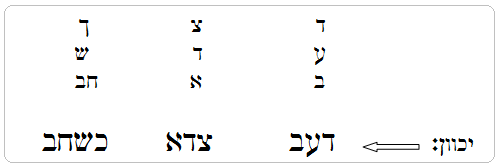

דף הפתיחה
| | | |
| |
"... ויאמר למועד הזה כעת חיה את חובקת בן..."(מלכים ב ד, ט"ז)
מצוות שאדם מחוייב לעשותם, שמובא בחז"ל שיש בהם 'שכר' ו'סגולה', הכוונה כשמקיימם בקביעות ובהידור, ולא רק בשביל לצאת ידי חובתו ולהיפטר. ויכול האדם להוסיף הידור במצווה זו יותר ממה שמחוייב וממה שהיה רגיל, כל אחד כפי הבנתו והשגתו. | |
| | | |
שבת ויום טוב
* יזרז הציבור לקבל את השבת מוקדם ובזכות זה יזכה לבנים
(רבי אליעזר פאפו – 'חסד לאלפים').
* סגולה לזכות לבנים ולגידול בנחת שתאמר האישה, לאחר הדלקת נרות שבת, את ההפטרה של יום א' של ראש השנה, המופיעה בספר שמואל א' פרק א'
(קשו"ע סימן ע"ה, ס"ב).
* יש ליתן, לפני הדלקת נרות שבת, כמה פרוטות לצדקה
(קבלה מרבינו האריז"ל).
* ראוי שתתפלל האישה, בשעת ההדלקה, שייתן לה הקב"ה בנים זכרים מאירים בתורה
(מג"א סימן רס"ג ס"ק י"א) וטוב שתתן מקודם איזה פרוטות לצדקה
(קשו"ע סימן ע"ה, ב').
* סגולה לבנים שיזהר מאוד וגם יזהיר לאחרים על תוספת שבת, בערב שבת ובמוצאי שבת
(ספר משפט צדק, בשם האריז"ל).
* יש עניין לשים על שולחן שבת תאנים, רימונים ותפוחים ולאכול מהם
(חקל תפוחים עילאין קדישין) (רבינו יוסף חיים).
* סופר שהגרי"צ דושינסקי זצ"ל יעץ לרבי איסר זלמן מלצר זצ"ל עצה והיא להדליק לשבת כ"ו נרות כנגד מניין הוי"ה ב"ה
(סיפור המעשה מובא בספר חיי עד ע"מ ק"מ).
* תשתדל האישה למזוג הכוס של הקידוש ושל ברכת המזון בידה, ותכוון למתק בזה הדינין, כי היין– דין, והמים– חסד, בסוד "ויבא לו יין וישת"
(בראשית כ"ז, כ"ה), דאמרו בזוהר
(בלק דף קפ"ט דארמי לה מיא ביינא) (לשון חכמים).
* על ידי הדסים בשבת זוכה לבנים תלמידי חכמים
(מהרש"א מסכת שבת דף ל"ד).
* הנותן צדקה בערב שבת לעניים, זוכה להתברך בפריה ורביה
(בן איש חי בספרו בן יהוידע תענית ח).
* יזהרו לחלק תמיד שמן לעניים יראי ה', לצורך נר שבת ויום טוב
(לשון חכמים).
* מי שאין לו בנים יהא רגיל בשמן
(ספר המידות).
* סגולה לבנים זכרים שע"י שמחת יום טוב כראוי, זוכה לבנים זכרים
(ספר רפואה וחיים).
* ע"י שמחת יום טוב וע"י הנחת תפילין כראוי, תלד אשתו בנים זכרים
(ספר המידות ערך בנים).
* לומר בכל מוצאי שבת 130 פעם 'אליהו הנביא' ואחר כך לומר נ' שערי בינה ולכוון מאוד בשערי פריה ורביה.
* רמז האר"י הקדוש
(ליקוטי תורה שמות ל"א, י"ג): בראשי התיבות של הפסוק "את שבתותי תשמורו כי אות היא ביני ובינכם"- ר"ת "אשתך אהוב". ובספר זכירה: "את שבתותי תשמורו"– ר"ת אשתו. וחזינן שהקדושה שבעונת שבת שייכת לעצם האות של השבת.
הבדלה
* סגולה לבנים זכרים, אמר רבי חייא בר אבא אמר רבי יוחנן כל המבדיל על היין במוצ"ש הויין ליה בנים זכרים, ורבי יהושע אמר, שזוכה לבנים ראויים להוראה. וכן אמר רבי אלעזר דכל המקדש את עצמו בשעת תשמיש הויין ליה בנים זכרים
(שבועות י"ח:).
* "אמר ר' יוחנן, כל המבדיל על היין במוצאי שבתות הויין ליה בנים זכרים"
(שבועות יח), ובמסכת פסחים
(קיג): "אמר ר' יוחנן שלושה מנוחלי העוה"ב וכו' והמבדיל על היין במוצאי שבתות" ובגמרא שם מוסיפה לבאר 'מאי היא, דמשייר מקידושא להבדלתא'. ו'מדברי החתם סופר' ו'המצפה איתן' אנו למדים שכמו שלעניין השכר שהמבדיל על היין זוכה להיות מנוחלי העולם הבא, אמרה הגמרא שזוכה לזה באופן שמשייר מקידוש להבדלה, כך גם לעניין השכר שזוכים על ידי הבדלה על היין לבנים זכרים היינו שמשייר מיין של קידוש להבדלה. ברשב"ם
(פסחים קיג ד"ה דמשייר) פירש, 'שיש לו יין מעט ומונע שתייתו בשביל הבדלה'. והיינו שמטבעו היה רוצה לשתות את כל הכוס של קידוש, מכל מקום שומר את היין להבדלה שיהיה לו מספיק להבדיל על היין, בזכות זה זוכה לבנים צדיקים. ה'מגן אברהם'
(סי' רע"א ס"ק כה) כתב: 'דטוב לקדש בכוס גדול, שישייר מאותו כוס לקידוש היום והבדלה', ומדבריו אנו למדים שהכוונה לשייר מכוס של קידוש בליל שבת, שזהו מצות קידוש מדאורייתא ועל זה אמרו חז"ל שישייר ממנה להבדלה. וכן היה אומר האדמו"ר מביאלה זצ"ל, לאברכים שהיו צריכים להיוושע בזש"ק, שיקפידו לעשות הבדלה בעצמם
(והיה מוסיף, שגם נשותיהם ישמעו הבדלה רק מהם).
* סגולה לבעל ולאישה שיתרמו יין ובשמים להבדלה בבית הכנסת.
הכנסת אורחים
* מצוות הכנסת אורחים, הפרי והשכר שלה כאן בעולם הזה, הם הבנים
(רבינו בחיי כד הקמח אות א' מערכת אורחים).
* בבראשית מ"ז, כ"ג נאמר: "הֶא לכם זרע" רמז- 'הא' ראשי תיבות '
הכנסת
אורחים' שעל ידי קיום מצוות 'הכנסת אורחים' זוכים לזרע
('דברי מאיר' להרה"צ ר' מאיר מפרימישלאן זי"ע פרשת ויגש ו'בשפת אמת' להרה"ק מבערזיאן זי"ע פרשת וירא)
* בבראשית ג, ט"ז נאמר: "בעצב תלדי בנים", רמז- 'עצב' ראשי תיבות '
עיניה
צרה
באורחים', והיינו ע"י שתתקן עניין זה של צרות עין באורחים תזכה ותלד בנים
(ספר 'רב טוב' ע"מ קנ"ד).
* מובא בזוהר הקדוש
(וירא קד): "בשעה שהקב"ה אוהב את האדם שולח לו מתנה ומה היא המתנה? עני, בעבור שיזכה על ידו ובזה ימשך על האדם חוט של חסד שיצילו בשעת הדין".
חופה
* בספר "מטה משה"
(פ"ג הכנסת כלה ד"ה איתא) דורש את כל מזמור קכ"ח שבתהילים על שמחת חתן וכלה. ומבאר: 'וראה בנים לבניך' – בשכר שהוא משמחו
(=את החתן) שיהיה לו בנים כשתילי זיתים, יזכה הוא לראות בנים ובני בנים. 'שלום על ישראל'- בשכר שעשה שלום וגרם אהבה ושלום ביניהם יזכה לראות בנים לבנים ובזה יהיה שלום על ישראל כמו שדרשו חז"ל בפרק נערה שהתפתתה
(כתובות נ:).
* לקשט את החופה לפני החתונה בכל מיני קישוטים לכבוד השכינה ששורה שם לכבוד החתן והכלה, היא סגולה לבנים
(בשם הרב בן ציון מוצפי שליט"א).
* סגולה לאישה לזכות בזרע בר קיימא, שתקשט כלה ביום חופתה, שתקנה לכלה תכשיט כלשהו
(בשם הרב בן ציון מוצפי שליט"א).
* אישה שמשכלת את בניה
הסגולה לזה: שתרחץ כלה לפני החופה (ספר המידות).
תכשיט
* אם יקפיד החתן שהטבעת של הקידושין תהיה עגולה מבפנים ומרובעת מבחוץ, ומממון החתן דווקא, יהיה מובטח שלא יהיו עקרים לעולם
(זהר חי לאדמו"ר מקומרנא חלק א' דף כ').
* אות 'ה' הנעשה מכסף מסוגל לפריה ורביה
(ניתן לתלות זאת על שרשרת) (ספר המידות).
* ידוע ששרשרת עם מגנט זה מועיל
(ספר המידות).
* תזהר האישה מלהתקשט יותר מידי כי זה מונע ממנה פרי בטן
(ספר המידות).
* פעמים שאין אישה מתעברת בגלל שהיא מתקשטת לפני אחרים ומכשילה אותם.
תיקון חצות
* אמירת תיקון חצות
כתוב בזוהר הקדוש: צריך כל אדם לעמוד בחצות הלילה מאהבת השם יתברך ולעסוק כל אחד לפי יכולתו, הן בתפילה והן בתחנונים, עד אור הבוקר. והקמים מבטלין גזירות רעות וכל העולם מתקיים בשבילם וחוט של חסד משוך עליהם ביום ומלאכים שומרים אותם תמיד.
, היא סגולה לאריכות ימים ולהיפקד בזרע של קיימא ושלא ימותו בניו
(מועד לכל חי לגר"ח פלאג"י).
זכות ארץ ישראל
* הגרים בחו"ל יעשו עליה לארץ ישראל ובעז"ה יפקדו
(ליקוטי מוהר"ן מ"ח).
כל מי שלא דר בארץ ישראל דומה כמי שאין לו אלוה.
אמר רב ענן: כל הקבור בארץ ישראל כאילו קבור תחת המזבח
(כתובות דף קי"א)
* שינוי מקום גורם לבנים
(ספר המידות).
מזון
* ראיה מוכחת מדברי הרמב"ן, פרשת משפטים
(שמות כ"ה, כ"ו), שמסביר את סמיכות הפסוק "וברך את לחמך... והסירותי מחלה מקרבך" לפסוק "לא תהיה משכלה ועקרה בארצך". וזה הסברו: 'ויתכן שיהיו הזכרים בכלל והסירותי מחלה מקרבך כי העיקור מחלה בגופים... ואחר כך הזכיר הנשים
(=לא תהיה משכלה ועקרה בארצך)'. הרי מוכח מדבריו שחוסר הולדה והעקרות הינו עניין רפואי וכמו שמרחיב שם שגם מי שאינו עקר מטבעו, בכל אופן צריך שיאכל וישתה מאכלים ומשקאות בריאים ויהיה במזג אוויר טוב, כדי שיוכל להוליד.
* דגים קטנים
(סרדינים) מפרין ורבין
(ברכות מ:).
* דודאים היא תרופה בדוקה ומפורסמת לעקרים ועקרות
(ניתן להשיג בבתי טבע).
* סגולה למי שלא זכה עדיין להיפקד בזרע של קיימא, לקחת עלים מקבר חבקוק הנביא ויבשלם וישתה מן המים
(עפ"י השמועה ע' ספר המידות ערך הריון ב').
* סגולה להיפקד בזרע של קיימא שהבעל והאישה ישתו ממי מעיין של אלישע הנביא.
* דאכלא בשרא שתיא חמרא הויין ליה בנים בריאים
(האוכל בשר והשותה יין יהיו לו בנים בריאים) (ספר המידות).
מצוות שילוח הקן
"שלח תשלח את האם"- את האם דווקא ולא את האב. ואיך ידע מי האם? דרך היונים שהאב דוגר ביום והאם בלילה – בערך משקיעה עד זריחה, ואז דווקא יוכל לקיים המצווה ביונה. אופן השילוח – יש שתי דעות/שיטות:
א. צריך לתופסה ואז לשלחה מידו
(רמב"ם, וכן דעת הגרב"צ אבא שאול זצ"ל).
ב. לשלח בכל אופן שהוא, כגון שיעשה רעש בסמוך לקן, יכה או ידחוף במקל את הציפור או את הקן וכן מבאר החת"ס את דעת רש"י וזוהי גם דעת החזו"א.
עצה נפלאה מובאת בספר 'קן ציפור השלם', עפ"י עצה זו יכול כל אדם לקיים מצוות שילוח הקן אף בחצרו הפרטית, אם יתנה תנאי מפורש לפני הטלת הביצים בחצרו על זו הדרך: אני לא רוצה שחצרי תקנה לי את הביצים שהיונה/הציפור תטיל בקן שבחצרי ורצוני שהביצים ישארו הפקר.
| | | |
| |
"כי יקרא קן ציפור לפניך בדרך בכל עץ או על הארץ אפרוחים או ביצים והאם רובצת על האפרוחים או על הביצים לא תיקח האם על הבנים שלח תשלח את האם ואת הבנים תיקח לך למען ייטב לך והארכת ימים"(פר' כי תצא, דברים כ"ב) | |
| | | |
* ומה שכרה של מצווה זו? שאם אין לך בנים אני נותן לך בנים. מנין? שנאמר – שלח תשלח את האם. ומה השכר שאתה נוטל? ואת הבנים תיקח לך
(מדרש רבא פר' תצא).
* אמר הקב"ה: אם קיימת מצוות שילוח הקן, אפילו היית עקר ולא מוליד חייך שאני פוקדך בבנים
(ילקוט שמעוני תתקל"ב).
* מצווה גוררת מצווה מנין? דכתיב "כי יקרא קן ציפור לפניך שלח תשלח..." אחריו מה דכתיב? "כי תבנה בית חדש"– תזכה לבנות בית חדש ולעשות מעקה. מה כתיב אחריו? "לא תזרע כרמך כלאיים"– תזכה לכרם ולזרוע שדה. מה כתיב אחריו? "לא תחרש בשור ובחמור"– תזכה לשוורים וחמורים. מה כתיב אחריו? "לא תלבש שעטנז"– תזכה לבגדים נאים מצמר ולבגדים נאים מפשתים. מה כתיב אחריו? "גדילים תעשה לך"– תזכה למצוות ציצית. מה כתיב אחריו? "כי יקח איש אשה"– תזכה לאישה ולבנים. הא למדנו שמצווה גוררת מצווה, שאם קיימת מצוות שילוח הקן תזכה לכל המצוות הללו, שלכך נסמכו הפרשיות הללו
(תנחומא פר' תצא).
נדר
* ידועה הסגולה הרווחת, שהרבה חשוכי בנים שנדרו שכשיוולד להם בן יקראו לו שמעון, על שם רבי שמעון בר יוחאי, או שיעשו את התגלחת הראשונה של הילד במירון, נושעו בפרי בטן
(טעמי המנהגים).
בכייה
| | | |
| |
כתוב בזוהר הקדוש (תרומה קסה.): ההשתוקקות של העולם העליון אל המקום הזה, כמו זכר שחשקו תמיד אל הנקבה. על-כן כשהמלך נכנס אל המלכה ומוצא אותה בעצבות, אז כל מה שהיא רוצה נמסר בידיה, והאדם ההוא והתפילה ההיא אינם חוזרים ריקם, והקב"ה מרחם עליו, אשרי חלקו של האדם ההוא ששופך דמעות לפני הקב"ה בתפילתו. | |
| | | |
* סגולה שכשבוכה על עוונותיו, יעביר הדמעות על פניו ועל מצחו, ששם רושם וכתיבת העוונות
(ראשית חכמה שער היראה), ומקורו בזוה"ק פרשת אחרי
(ע"ה:) באחד שבכה על עוונותיו ורחץ בהם פניו וקרא עליו רבי אבא את הפסוק: "וסר עוונך וחטאתך תכופר"
(ישעיה ו, ז).
* ע"י הדמעה מתבטלים קטרוגיו, כמו שכתב הפייטן בפיוט ליל הכיפורים "אנסך דמעי לך– מחה חטאתי בדמעתי"
(שערי תשובה לר"י).
* כשאין יכול לבכות, ייתן קולו בבכי כאילו הוא בוכה וזה פירוש הפסוק: "כי שמע ה' קול בכיי"
(תהילים ו, ט) (של"ה בספר 'ווי העמודים' ובמס' תמיד פרק 'נר מצווה' מ"ב).
* הביא האליה רבה בסימן ק"א סעיף קטן ט' וכן כתב בספר פלא יועץ בערך בכיה כשאין יכול לבכות ייתן את קולו בבכי שגם הוא חשוב לפני ה' ומבריח את המקטרגים
(ישראל לסגולתו).
להתברך מצדיק
* לבקש מתלמיד חכם שיתפלל עבורו
(עפ"י מדרש רבא רות פרשה ו').
* לערוך פדיון נפש אצל הצדיקים.
* מי שהצדיק נעשה אכסניה אצלו מתברך בבנים
(ספר המידות).
* ע"י אמונת צדיקים הבנים חיים וקיימים
(ספר המידות).
* מובא בספרים סיפורים על אנשים שהלכו לקברו של שמואל הנביא וקראו שם את מעשה חנה ותפילתה ונפקדו
(מעשה חנה ותפילתה).
* סגולה לבנים שיקבל ברכה מהצדיקים
מובא בנועם אלימלך
(דף ס"ד) דהנה יש להבין מה שהצדיק מתפלל ונענה בתפילתו, הלוא נראה כהשתנות וחלילה להיחיד האמיתי מהשתנות אך העניין הוא כך דהצדיק המתפלל על איזה אדם, בשעה שהוא מתפלל הוא מתפלל בכל רמ"ח אבריו ושס"ה גידיו בלי שום מחשבה זרה, והוא מקשר, אותו אדם שמתפלל בעדו, ברמ"ח אבריו שלו, והוא מקדשו לזה הוא נענה כי מהיכא תיתי יחסר לאדם בוודאי מחמת עונש על חטא שעשה באחד מאברי גופו ובעת שהצדיק מעטהו ומכסהו עמו אז נעשה אברי אותו אדם עם אברי הצדיק אחד וממילא נתקן האדם וכיון שנתקן החטא חלף עבר העונש ממנו.
עפ"י מה שאמרו במדרש רבה רות
(פו) שבועז ורות נפקדו מברכותיהם של צדיקים. ואמר רבי יוחנן לעולם אל ימנע אדם עצמו מלילך אצל זקן לברכו.
* בית האישה השונמית ע"ה
(הנמצא בכפר שונם בצפון) סגולה לבנים
(אורחות רבינו הסטיפלר ע"מ של"ט). כל הרוצה שיתפללו עליו בבית השונמית יפנה לרב רן יוסף חיים מסעוד אבוחצירא שליט"א מעפולה, מספר פלאפון: 052-7161964 בשעות הערב.
* יש עניין להתפלל בקברה של חנה הנביאה הקבורה עם בנה שמואל הנביא וכן בקברה של רחל אימנו
(בשם הרב בן ציון מוצפי שליט"א).
* יש מסורת שהתפילה במערה בו קבור רב כהנא יכולה לפקוד עקרות,
(ספר 'תורת מראה' לרב רפאל אוחנה מי שהיה רבה של העיר טבריה לפני מאה שנה) ולדבריו תפילה במערה זו חוללה ניסים ונפלאות.
(מיקום המערה בסמוך לעיר טבריה ליד מלון "גני נווה חמת" הישן, בחצר בפנים, שממוקם ליד מלון "חמי טבריה"). סגולות נוספות בתפילות במערה זו: לרפאות חולים, חזרה בתשובה.
איש ואישה
* איש ואישה שלא נפקדו עדיין, יזהרו שלא יקללו זה לזה חס ושלום, כי זה פגם גדול מאוד, וגורם גדול לעיכוב פקידה
עיקר מעלת קיום המצווה תלויה בקשר אמיתי בין האיש לאישה, ומכיוון ובצורת קשר זה שהאיש משפיע והאישה מקבלת הרי כל קשר בין משפיע ומקבל מיוסד על שני דברים: רצון ושמחה.
(ספר המידות).
* מי שמהרהר בזנות, גם אשתו באה לידי הרהורים וכשאשתו מהרהרת, על ידי זה באין עליה הקליפות
(כוחות טומאה) בחלום ועל ידי זה הבנים שלה מתים
(ספר המידות).
* מה יעשה אדם ויהיה לו בנים? יפזר מעותיו לעניים וישמח את אשתו
עוד נצרך לרמוז "וישחק עמה" כדי להשלים את מצות עונה, שחובתו בזה לשמחה, ולכן בכל מקום בחז"ל נקראת המצווה:"ישמח את אשתו לדבר מצווה"
(ב"ב י'), "חייב אדם לשמח את אשתו".
(פסחים עב') ובזוהר למחדי לאינתתיה
(בראשית נ.ועוד).
לפני תשמיש
(ספר המידות).
* לפעמים בניין הבית גורם לאישה שלא תלד, כי העצים שבבניין אינם מונחים כסדר הניתן להם מששת ימי בראשית ואז הבית נקרא הרוס אפילו בבנינו, וההרוס הזה בא ומזיק לאישה ואינה מולדת
(ספר המידות ערך בית).
* היות ו'מידה טובה מרובה', נבין במסכת דרך ארץ זוטא
(פרק ט') שעל ידי הזהירות בכבוד אשתו, תפרה ותרבה. הגאון החיד"א זצ"ל מסביר
(ככר לאדן על אתר):"אשר לפי חכמי הטבע העיבור בא לאישה כאשר היא שמחה. ראיה לכך בדברי הפסוק
(תהילים קי"ג) "אם הבנים שמחה", שעל ידי השמחה תזכה להיות אם הבנים, ועל כן יזהר האדם בכבוד אשתו.
* שואלים חז"ל
(במסכת בבא בתרא י: עיין ברש"י): 'מה יעשה אדם ויהיו לו בנים זכרים? ר' יהושע אומר ישמח אשתו לדבר מצווה'. בספר ' תורת אמת'
(פרשת תולדות ד"ה ואלה תולדות) אומר: 'וידוע כי עניין כוח הולדה נמשך מבחינת אהבה וכוח המשפיע באדם'. ובזה מבאר הפסוק 'ואלה תולדות יצחק ---, אברהם הוליד את יצחק', היות שיצחק – מידת הצמצום לא היה יכול להוליד, לכן נצרך לסיוע מאברהם – מידת החסד וההתפשטות כדי להוליד, וזה הפירוש "אברהם הוליד את יצחק".
* קיום רצון בעלה זהו עצה לבנים
(הרב יעקב הלל שליט"א בספרו 'רני עקרה').
קדושה
* אמר רבי אלעזר כל המסתכל בערווה, קשתו ננערת
(רש"י מפרש: כוח קושי אבר שלו ננער- שאינו מוליד, שנאמר עריה תעור קשתך, עריה- שאתה מסתכל בה ממש בערוותה היא תעיר קשתך. ויש אומרים המסתכל, המחשב בעריות, דאשת איש קשתו גיבורת ידו ננערת מתהלכת ומתמעטת) (ב"מ דף ק"ט ע"מ ב').
* "אמר רבי יוחנן משום רבי שמעון בר יוחאי: כל שאינו פורש מאשתו סמוך לויסתה, אפילו הויין לו
(יהיו לו) בנים כבני אהרון, מתים"
(שבועות דף י"ח ע"מ ב').
* אמר רבי חייא בר אבא אמר רבי יוחנן, כל הפורש מאשתו סמוך לויסתה הויין לו בנים זכרים
(שם).
* רבי יהושע בן לוי אמר הויין לו בנים ראויים להוראה
(שם).
* ללמוד בשולחן ערוך אורח חיים סימן ר"מ ובספר 'ראשית חכמה' שער הקדושה פרק ט"ז וי"ז ולקיים מה שכתוב בהם.
* מה יעשה אדם ויהיו לו בנים זכרים? ישא אישה ההוגנת לו ויקדש עצמו בשעת תשמיש ויבקש ממי שהבנים שלו
(ספר המידות).
* כל הנותן מיטתו בין צפון לדרום הויין ליה בנים זכרים.
(ברכות ה') דאמר רבי חמא ברבי חנינא אמר רבי יצחק, כל הנותן מיטתו בין צפון לדרום הויין ליה בנים זכרים שנאמר
(תהילים י"ז) "ויצפונך תמלא בטנם ישבעו בנים", רב נחמן בר יצחק אמר אף אין אשתו מפלת נפלים
(ברכות דף ד' ע"מ א').
* אמרו רז"ל "שכר פרי הבטן – בשכר שמשהין עצמן על הבטן הויין לו בנים זכרים"
(נדה עא:)
ליל טבילה
* כשתטבול האישה ייתן שמן לעילוי נשמת רבי מאיר ויאמר קודם: הריני מנדב שמן זה למאור לע"נ רבי מאיר בעל הנס כדי שהקב"ה בזכות ר' מאיר יזכנו להוליד הלילה הזו הבאה עלינו לשלום, ותתעבר אשתי
(פב"פ) מבן זכר לחיים טובים ולקיימא, זרע אנשים לעבודתו יתברך, 'אלהא דרבי מאיר ענני' -שלוש פעמים
(החיד"א בספר עבודת הקודש- כף אחת סי' ג').
* בספר "שערי רחמים" ח"ב ס"י שע"ה מובא: "טוב להצניע חמישה בדי ערבה
(שחבטו בהם בהושענא רבה), שיש בהם סגולות הרבה, ובכלל הסגולות הוא שמועיל לאישה שלא נפקדה בהריון, ח"ו. תצלה בשר בשלושה בדי ערבה
(תוריד את עלי הערבה מהענף ותשחיל לתוכו את הבשר) אחד בשם האיש ואחד בשם האישה, והשלישי בשם שניהם, ויאכלו את הבשר, משלושת הענפים בליל טבילתה ויועיל, בעז"ה, שתיפקד האישה בהריון
ג"כ העלים של הערבות יועילו לחולי הקדחת בפרט ויש בהם סגולות רבות לרפואה בכלל: יש להרתיח אותם
(לחלוט) ולשתות המים.
(עיין בספר "רוח חיים" סי' תרס"ד אות ג' ועיין בספר "יפה ללב" ח"ב אות טו סעיף ט' לרה"ג שד"ה יצ"ו).
* בשם הרב בניהו שמואלי שליט"א: ירשום בעט, על גבי שתי פיתות, את שמות הנהרות שבגן עדן
(את שני הטורים שלהלן בכל אחת מהפיתות), ויאכלו האיש והאישה כל אחד פיתה אחת:
(במידה ומתעוררת שאלה בנושא, אפשר לפנות ישירות לישיבת המקובלים "נהר שלום", שבירושלים, שבראשה עומד הרב בניהו שמואלי שליט"א בטלפון מס': 02-6223566).
* מובא בספר "כף החיים" סימן ר"מ ס"ק כ"ה: "ועוד ראינו מאדם כשר שהיה נוהג לטבול ביום שטבלה אשתו, כדי להמשיך קדושה למעלה בעת הזיווג.
* שהבעל יאכל שום מטוגן
השום מציל מעין הרע, ממזיקים, ומכל מיני גזירות קשות. לכן רבינו יוסף חיים כותב אם יש לו בן חולה או יש לו איזה בעיה ישים שן של שום או שניים וזה מגרש מזיקים וחולאים רעים.
, יש לטגן שום, וכשצבע השום הופך לקצת חום, יכבה את האש ויאכל את השום בליל הטבילה ובכמה לילות הסמוכים
(סגולות ותפילות לר' אהרון זכאי שליט"א)
* סגולה נפלאה לקבל על עצמו בליל טבילה שאם יעזור הקב"ה ותיכנס להריון יאמרו 'נשמת כל חי' כולו בכוונה ובשמחה" ע"כ
(ספר תשובות והנהגות להגר"מ שטרנבוך חלק ה' יו"ד ר"ג ע"מ קצ"ה).
* סגולה לזכות בבן זכר שבליל הטבילה, אחר שיקרא ק"ש קודם שישן יאמר ג"פ "יהי רצון מלפניך אהיה אשר אהיה
(יכוון קבלתו שיש בו ד' אותיות אל"ף ה"א יו"ד ה"א כוחו הגדול פשוט או מורכב לכל דבר סודו מורה על כתב האלוקות היה הווה ויהיה) שבלילה הזאת תתעבר אשתי פב"פ מבן זכר וחכם ונתת לאמתך זרע אנשים, ונפש חכמה בכוחך הגדול לעבודתך כן יהי רצון אמן"
(עבודת הקודש להחיד"א כף אחת).
* בליל טבילה ידליקו האיש ואשתו, כל אחד, עשרה נרות בבית הכנסת לפני ארון הקודש
(לשון חכמים).
* גם הוא יאכל תאנה שהוא ב"נצח". והיא תאכל רימון שהוא ב"הוד"
(לשון חכמים).
* יזהרו לחלק תמיד שמן לעניים יראי ה' לצורך נר שבת, יום טוב ונרות חנוכה
(לשון חכמים).
* גם תזהר האישה לעשות בידה גבינה מן החלב ותחלקנה לתלמידי חכמים יראי שמים
(לשון חכמים)
* סגולה לאישה שתתרום שתייה ללימוד תורה בלילה הסמוך ליום טבילתה כגון: כולל חצות, תיקון ליל שבועות, הושענא רבה.
* כתוב בספר "שני לוחות הברית"
(שער האותיות, ע"מ ע"ד- השל"ה): "כך תאמרו אתה ואישתך, בהתעוררות לב ובטהרת נשמה, לאחר תיקון המעשים בכל ליל טבילה וראוי ליתן צדקה מקודם: "בשם יי עטיפא וקטפא אזדמנת שארי שארי לא תיעול ולא תנפוק לא דידך ולא בעדבך תוב תוב ימא ארנישת גלגלוי ליך קראן בחקלא קדישא אחידנא בקדושא דמלכא את עטיפנא".
* "היזהרו איש ואשתו, בליל הטבילה, לאכול תפוח, כי ידוע שהתפוח הוא בדכוּרא, וכל הפירות הם בנוּקבא, ויכוונו בברכתו היטב כדי שיהיה להם כוח להמשיך מבחינת דכוּרא, ואותה הלילה לא יאכלו מפירות אחרים, גם מהתפוח שתאכל האישה, ייתן אותו האיש אליה מידו לידה, וכאשר תקבל אותו מידו, תאמר פסוק זה: " תחת התפוח עוררתיך שמה חִבְלַתְך אִמֶךְ, שמה חִבְלַה יְלָדַתְךָ"
(שיר השירים ח, ה) ותאמר פס' זה שלוש פעמים
(לשון חכמים, ס' ע"ו).
לפני קיום המצווה
* "טוב לומר קודם הזיווג "מזמור לדוד ה' רועי לא אחסר" וגו' ועי"ז מגרש הקליפות וימשוך נשמה קדושה לבניו"
(ספר אור צדיקים סי' כ"ז אות כ'). וכ"כ בבאר היטב
(סי' ר"מ ס"ק ד').
* יאמרו הבעל והאישה, קודם הזיווג, פרשת "ובראשי חודשיכם"
נוסח הפרשה מופיע בסוף החוברת.
וע"י זה הוולד יחיה
(בשם הגר"ח פלאג'י) וכן הוא סגולה לזרע של קיימא
(ליקוטי עצות ערך בנים ט'). וכן כשהתינוק חולה ח"ו יאמרו אז, ג"כ איש והאישה, פרשת "ובראשי חודשיכם".
* כשאיש והאישה רוחצים ידיהם ונותנים צדקה קודם תשמיש בזה הם מסירים את הטומאה מהילדים שהם מולידים
(ספר המידות).
* יאמרו הבעל והאישה קודם הזיווג, בידיים נקיות, כ"ב פעמים אותיות א',ב' עד האות ת' ואח"כ יאמרו כ"ב פעמים "עשה עימי אות לטובה" ארבע תיבות אלו דווקא
(ספר עטרת תפארת לבן איש חי).
* קודם קיום המצווה יאמר: "
תורה
ציוה
לנו
משה
מורשה
קהילת
יעקב" ויכוון ראשי תיבות 'תצלממקי'
(ספר סגולות).
* מי ששומר את עצמו גם את העת והזמן שמזווג שלא יהיה לא הוא ולא העת והזמן, חם ביותר ולא קר ביותר, על ידי זה בניו הנולדים יהיו חכמים גדולים
(ספר המידות).
* סגולה לפקידת עקרות לכוין שם ש-ד-י שעולה גימטריא מילוי דהיינו שין דלת יוד
(500) כנגד איברים שיש באיש ובאישה, באיש: רמ"ח
(248) ובאישה: רנ"ב
(252), סה"כ 500 ואת השם הזה יכוון בשעת הזיווג. וקודם לכן ישים ידו על המזוזה ויתפלל על הזיווג
(עפ"י בעל הטורים בראשית ל"ה י"א).
* כותב הפלא יועץ
(בערך זיווג): "ואני אומר שטוב לכוון בפס' "שמע ישראל" וכל כוונותיו בפרשת "ואהבת". "וגם ימסור וילמד את אשתו שתעשה לו קודם תשמיש הסימנים שמסר יעקב לרחל, דהיינו שתאחוז לו בוהן רגלו הימני, בוהן ידו הימני, ואליון אזנו הימנית. ואחר תשמיש יחזרו וירחצו ידיהם, וישפוך מים צלולים סביב מיטתו- זהו דרך ישרה להוציא זרע רב.
* כתוב בספר "פתחי חיים": טוב לומר קודם קיום המצווה עשרה פסוקים אלו, ולהרהר בהם אחר כך, ובזה יזכו לייחד המידות הקדושים וימשיכו על עצמם קדושה וברכה וכל טוב:
| | | |
| |
"בראשית ברא אלוהים את השמים ואת הארץ:" (בראשית א)
"ובני ישראל פרו וישרצו וירבו ויעצמו במאוד מאוד ותמלא הארץ אותם:" (שמות א)
"דבר אל כל עדת בני ישראל ואמרת אליהם קדושים תהיו כי קדוש אני ה' אלוהיכם:" (ויקרא יט)
"יברכך ה' וישמרך:" (במדבר ו)
"יאר ה' פניו אליך ויחונך:" (שם)
"ישא ה' פניו אליך וישם לך שלום:" (שם)
"ה' אלוהי אבותיכם יוסף עליכם ככם אלף פעמים ויברך אתכם כאשר דיבר לכם:" (דברים א)
"תורה ציוה לנו משה מורשה קהילת יעקב:" (שם, לג)
"ולכל היד החזקה ולכל המורא הגדול אשר עשה משה לעיני כל ישראל:" (שם, לד)
"והיה כעץ שתול על פלגי מים אשר פריו יתן בעיתו ועלהו לא יבול וכל אשר יעשה יצליח:" (תהילים א) | |
| | | |
מידות
* "אישה אינה מתעברת אלא אם כן בהיותה בשמחה"
(כי העיצבון מכווץ בית רחמה שלא תקבל הריון)-
(ספר עצי המערכה).
* מי שביטל את חברו מפריה ורביה הולך לשאול בלא ולד
(ספר המידות ערך בנים).
* סגולה לבנים להקטין את עצמו
(ענוה) (ספר המידות).
* על ידי כיבוד אב תזכה לבנים זכרים
(ספר המידות).
* אישה ששונאת מעשה הרשעים עי"ז היא נפקדת, והוא על פי שאמרו חז"ל כיון שראה הקב"ה ששנואים מעשי עשו בפניה
(של לאה) ויפתח את רחמה
(ב"ב קכ"ג).
* מי שאינו אומר שקר, הקב"ה מושיע לו בעת צרתו, גם בנים יהיו לו
(ספר המידות ערך אמת).
* מי שמקבל את הייסורים באהבה, זוכה לזרע שיאריכו ימיהם
(ספר המידות).
* מי שמשתוקק לעשות איזה מצווה ואין זוכה לעשות אותה עי"ז יזכה לבנים, וגדולתו מוריש לבניו, ובניו יזכו לעשות המצווה הזאת
(ספר המידות).
* מי שרודף שלום עי"ז יזכה לראות בנים לבניו
(ספר המידות).
* סיגופים מועילים להולדה
(ספר המידות).
* המחלוקת סימן רע לבנים, והשלום זה סימן טוב לבנים
(ספר המידות).
* צריך לחזר אחר מוהל צדיק וירא שמים, כי כשהמוהל אינו טוב יכול להיות שלא יהיה מוליד, חס ושלום, הנימול על ידו
(ספר המידות). וגם על ידי זה בא התינוק, חס ושלום, לידי חולי נופל
(שם).
* המכבד את אביו, הקב"ה נותן לו בנים שיכבדהו
(ילקוט יוסף, מוסר בענייני כיבוד אב ואם).
חסד
| | | |
| |
"והנה עתה שמידת הדין גברה מאוד על כל העולם ואין שום עצה להינצל מידי צרות המתחדשות יום ויום, מה מאוד יש להתחזק במידת החסד, כדי שע"י זה יתעורר מידת החסד העליונה וכו' היינו שעי"ז יתעורר למעלה חסד של השם יתברך" (אהבת חסד ח"ב הגה"ה לפ"ה). | |
| | | |
* תא חזי כל מי שיש לו חלק בקירוב רחוקים לאביהם שבשמים, גורם להכניע הסטרא אחרא, וגורם שיתעלה הקב"ה. והוא מקיים את כל העולם הזה ועולם הבא, וזוכה לראות בנים לבניו, זוכה לעשירות וזוכה לעולם הבא ....
(זוהר פר' תרומה דף קכ"ח – קכ"ט).
* סגולה לבנים, לקרב אנשים לקב"ה
(ליקוטי עצות ערך בנים ד').
"כל המלמד את בן עם הארץ תורה, אפילו הקב"ה גוזר גזירה מבטלה בשבילו"
(בבא מציעא פה' ע"מ ב').
" ואם תוציא יקר מזולל כפי תהיה"
(ירמיהו ט"ו, י"ט)- אם תוציא אדם הגון מאדם רשע, שתחזירנו למוטב "כפי תהיה", שאני גוזר גזירה ואתה מבטלה
(רש"י שם)
* הוצאה לאור ספר של צדיק יועיל לפרי בטן, כמובא בהקדמה לספר "ברכת מועדים לחיים" דרושים לרבינו רבי חיים פלאג'י, על אדם שהוציא לאור ספר של רב גדול וזכה להיפקד בזרע של קיימא ונרמז בפס' "זה ספר תולדות-אדם"
(וכן מובא בספר המידות למוהר"ן).
* אמרו חז"ל: "מה יעשה אדם ויהיו לו בנים זכרים? יעשה חפצי שמים וחפצי אשתו".
* ההשתדלות בפדיון שבויים מסוגל להולדה
(ספר המידות).
* מובא בספר "אהבת חסד" של החפץ חיים זצוק"ל
(חלק ב', פרק חמישי):
| | | |
| |
"ומן התימה על האנשים שמחפשין סגולות שיוולדו להם בנים, ומוציאין על הסגולות כמה וכמה רובלי כסף, ויש שמוציאין למאות ולאלפים כל אחד לפי עושרו. יותר טוב שיעשו סגולה הנמצא בחז"ל, היינו שיתעסקו תמיד במידת הצדקה, לעזור לעניים במה שיוכלו, להיות מן המעשים שהוא גדול מן העושה (הן בעניין פרנסת חיותם, וגם לגדל את בניהם ולהכניסם לתלמוד תורה, שבעבור זה יזכו לבנים בעלי תורה, וכמו שנתבאר), או שיעשו גמ"ח קבוע (מממונם, או שיזרזו אחרים שיסיעום בעניין זה), ויתעסקו בו תמיד. כי עיקר המצווה הוא העסק התמידי, שאדם מרגיל גופו לזה, וכמו שמורה לשון הכתוב: "רודף צדקה וגו'". ובזכות זה יתנהג השם יתברך עמהם גם כן במידת צדקה וחסד וימלא רצונם בזה, כמו שאמרו חז"ל (בבא בתרא ט:), דזוכה עבור זה להיות לו בנים וכו'. וכן עשו הרבה אנשים בזמננו והצליחו בזה. ואפילו אם, ח"ו, נסגר הדלת עליו מן השמים בעניין זה (היינו, שכלה כל ימיו, ולא היה לו בנים, דאי לאו הכי, אין שום ראיה דיש תפילה שהוא נענה תיכף ויש תפילה שהוא נענה אחר כמה שנים, כמו שאמרו חז"ל). על כל פנים, מצוותיו שעשה לא יאבדו, והן הן תולדותיו. כמו שאמרו חז"ל (בראשית רבה ל' ה'), שתולדותיהם של צדיקים הוא המעשים טובים שלהן כי הן תולדות נפשו, מה שאין כן, אם הוציא מעותיו לטמיון על סגולות חיצוניות, שלא יועילו ולא יצליחו, הוא מכלה כוחותיו לריק. והמשכיל יתן כל זה אל ליבו, וכל המרחם על הבריות- מרחמין עליו מן השמים. ועיין (נדה ע"א.) שאמרו שם על זה, שיתפלל למי שהבנים שלו, וידוע מה שאמרו חז"ל שהגומל חסד- תפילתו נשמעת. | |
| | | |
* מי שתורם שמן למאור כדי שילמדו בו תלמידי חכמים יזכה לבנים תלמידי חכמים
(כיום זו תרומה להוצאות חשמל בבית הכנסת) (בשם החיד"א).
* העוסק בתורה וגמילות חסדים זוכה להרבה בנים
(ספר המידות).
* העוסק בתורה ובגמילות חסדים זוכה להרבות בנים
(ספר המידות).
* להיפקד בזרע של קיימא– לעשות גמ"ח לרבים של כסף או כלים
(להלוות וכו') (ספר שם עולם לחפץ חיים הגהה פרק ח').
* רבי יהושע בן לוי אמר כל הרגיל לעשות צדקה זוכה והויין ליה בנים בעלי חכמה בעלי עושר בעלי אגדה
(בבא בתרא ט:).
* כל הרודף צדקה זוכה לבנים בעלי עושר, בעלי חכמה, בעלי אגדה
(ספר המידות).
* האיש והאישה יספיקו אור ומים לחברה הקדושה העומדים בבית ה' בלילות דהיינו שיתנו מכיסם מה שצריך להם מים לשתות עם המשקה של הקהב"י
(=הקפה) כנהוג. ובזכות זה יתברכו טיפות הזרע שלהם, ותהיה האישה קולטת טיפת הזרע להצטייר מן הברור שבה ולד שתתעבר ממנו, וירגילו בזה תמיד
(לשון חכמים).
* סגולה למי שאין לו בנים שיכתוב ספר תורה ויועיל לו ורמז לזה מהתורה הקדושה "זה ספר תולדות-אדם"
(ספר סגולות ותפילות לר' אהרון זכאי שליט"א). וכתב בספר אמרי שפר
(כלל ט"ז) וזה לשונו: ובעיני ראיתי אישה שנפקדה אחרי 16 שנים אחר כתיבה וילדה בן זכר. וכן מי שקונה ספרים ומשאילם לאחרים, הקב"ה נותן לו בנים
(שם) וכן מובא במדרש רבה פרשת במדבר
(פרשה יד) ופרשת אמור
(פרשה כז), משמע שהוא גם במי שמשלם שכר מלמדים, שמסוגל לבן זכר.
* אישה הקונה ספרים להשאילן לאחרים ללמוד בהם, תזכה לבנים תלמידי חכמים
(מעבר יבוק ע"מ רל"ח).
* לבדוק אם בני הזוג שלמו דמי שדכנות, ואין זה מנהג חסידות אלא חובה היא לשלם
(ספר סגולות ותפילות מובא בשם רבי משה פיינשטיין).
* מי שמשמח חתן וכלה יזכה שאשתו תלד זכרים
(ספר המידות).
* מי שמשתדל שתהיה פרנסה לדורשי ה', ע"י זה יזכה שלא יצאו בניו לתרבות רעה
(ספר המידות).
* סגולה לאישה שתאפה חלות או תכין גבינה ותחלק זאת לעניים.
(גבינה– משום שהעובר במעי אימו משול לגבינה)
צדקה
| | | |
| |
"הצדקה, מרחבת כל הפתחים של הקדושה שכשאדם נכנס באיזה דרך ועבודה מעבודת השם אזי הוא צריך לפתוח שם פתח להיכנס באותו הדרך ובשביל זה כל ההתחלות קשות (מכילתא, פרשת יתרו), וכן אפילו כשיש פתח והתחלה, העבודת השם אינה באה בנקל וצריכין כמה יגיעות וכוחות שונים כדי להרחיב הפתח, דהיינו לעשות איזה עבודה שיהיה לה הידור, והעצה לזה הוא נתינת צדקה, כי הצדקה פותחת ומרחבת את כל הפתחים של הקדושה בבחינת 'פתוח תפתח' וע"כ קודם כל מצווה טוב ליתן צדקה כדי לפתוח ולהרחיב את פתח הקדושה שרצונו לעשות ואז לא יהיה קשה וכבד עליו כל- כך להיכנס בהם" (ליקוטי מוהר"ן תורה ד ח"ב) | |
| | | |
* כתוב במסכת בבא בתרא: "מה יעשה אדם ויהיו לו בנים זכרים? רבי אלעזר אומר יפזר מעותיו לעניים, רבי יהושע אומר ישמח אשתו כהכנה לדבר מצווה.
* המהרש"א מביא שמתן צדקה הוא סגולה לבנים זכרים.
מובא בבן יהוידע פירוש אחר, בדרך מידה כנגד מידה: מצינו בספרים שכל "משפיע" נקרא זכר וכל "מושפע"- המקבל את ההשפעה נקרא נקבה
(דוגמא לכך היא תהליך יצירת הוולד). המפזר מעותיו לעניים הוא בבחינת משפיע, שנותן אפשרות מחיה לאחרים. הגמרא מלמדת ששכרו, בדרך של מידה כנגד מידה, הוא שיתברך בבנים זכרים שהם עצמם, מטבעם "משפיעים".
או בדרך אחרת, יפזר מעותיו לעניים פירושו: לעניים רבים הואיל וכאמור כל משפיע נקרא זכר והוא חילק השפעתו לחלקים רבים, לפיכך יזכה מידה כנגד מידה, שיוליד הרבה זכרים.
לימוד תורה
* אמירת 'המעמדות' טוב לבנים
(ספר המידות).
* אמירת שמות הצדיקים מסוגל לבנים
(כתבי מוהר"ן).
* אישה הקוראת מעשי צדיקים ושבחיהם עי"ז יזכו בעז"ה להיפקד בבנים
(שבט מוסר פ"כ כ"ד).
* לספר סיפורי צדיקים ובכלל זה סיפורי מעשיות מספריו של רבי נחמן מברסלב, מסוגל לזרע של קיימא.
* מי שאין לו בן זכר ירגיל עצמו להביא מתנות לתלמידי חכמים, ויאמר פרשה של ביכורים, וגם ילמד גמרא הרבה, וימעט מלימוד אגדה כי לימוד אגדה מסוגל לבנות
(ספר המידות).
* סגולה לבנים ללמוד בקביעות בכל יום ויום בספר 'אור החיים' לרבי חיים בן עטר
(עוד יוסף חי ע"מ קי"ח).
* עצה לישועות ללמוד בספר 'נועם אלימלך' ובפרט בשבת.
תפילה
* דברי האדמו"ר 'שער יששכר' ממונקאטש
(ל"ג בעומר) זצ"ל שאומר שב
ברכת רפאנו מבקשים על בנים, היות וחוסר ההולדה בא מחמת שצריך רפואה. וזה לשונו: 'ומקובל בידינו מאאזמ"ו הה"ק מוה"ר שלמה
(בעל 'שם שלמה') זי"ע, כי ב
ברכת רפאנו, יוכלו לפעול כל הישועות גם בנים, כי הוא דברים שצריכין רפואה'. א"כ מפורש העניין להתפלל ברפאנו על בנים וגם שח"ו לא תהיה משכלה, וזה ודאי עניין של רפואה. ואילו החוזה מלובלין זצ"ל מבאר
(זאת זכרון, לז) באופן אחר שברכת רפאנו כולל בקשה על בנים, ומפרש: 'רפאני ה' ונרפא', מבואר בזוהר הקדוש איש זה אות – י' ואישה זה אות – ה', בן זה אות – ו', בת זה אות – ה', ביחד שם הוי"ה. ומבקשים 'רפאני' – תרפא אותי, שיהיה 'הוי"ה' – שיהיה השם שלם על ידי שאקיים פריה ורביה ואוליד בן ובת, ועל ידי זה 'וארפא' משאר המחלות. וכמו שמצינו אצל חזקיה
(ברכות י) שהיה חולה ואחרי שקיבל על עצמו להתחתן ולהוליד התרפא ממחלתו.
* 'ויאמרו לפני כל התעסקות בזה
(=רפואות בקשר לבנים): '
יהי רצון מלפניך ה' אלוקינו ואלוקי אבותינו שיהא עסק זה לרפואה שלמה ותרפאנו וניפקד בזרע חייא וקיימא כי רופא חינם אתה' ויראו נפלאות בס"ד
(תשובות והנהגות סי' ר"ג להגר"מ שטרנבוך שליט"א).
* לפנות בוקר, זו עת רצון לכל לעשות טובות לכל העולם, ומתוך שזו עת רצון, משתיק הקב"ה את בית דינו, והוא בעצמו הולך ומבקש זכותו של האדם. ואם הוא נמצא בזמן הזה בתפילה
(או תפילת האחרים עליו) – עונה לו ה'
(תרגום הזוהר הקדוש, תהילים ה').
* יאסוף עשרה אנשים יראי ה', כשרים וטובים למקום אחד, ויניחו כולם את שתי ידיהם בבת אחת על ראש האיש באופן שיהיו עשרה זוגות ידיים על ראש המתברך וכל ביה עשרה שכינתא שריא
(השכינה שורה) ('בן איש חיל' ח"ג בסופו).
* אמירת פרשת ציצית, במסירות נפש וביראה גדולה, גם הלבשת ערומים ע"י זה זוכה לבנים זכרים
(ספר המידות).
* השירות והתשבחות שאומרים קודם אור היום, מסוגל לבנים וגם לאישה שנחסר חלבה
(ספר המידות).
* להיזהר מאוד בברכות התורה באומרו "ונהיה אנחנו וצאצאינו וצאצאי צאצאינו" וכן בברכת אהבה רבה "ותן בליבנו בינה וכו'" ויכוון על זרעו וזרע זרעו
(השל"ה הקדוש).
* להרבות בתפילה כמו שכתוב אצל יצחק ורבקה שנפקדו בזכות התפילה.
* לומר מזמור קכ"ח בתהילים עשר פעמים ביום במשך 52 יום.
* לזכות לבנים צדיקים יזהר בעניית 'אמן' 'ואמן יהא שמיה רבא', כמו שכתוב בפסוק "פתחו שערים ויבוא גוי צדיק שומר אמונים" אימתי יבוא ויולד
(בן) צדיק? כאשר תהיו שומרי אמונים, אל תקרי אמונים אלא אמנים.
* נראה כי זכירת יציאת מצרים היא סגולה להיפקד בבנים
(ישראל וסגולתו) (ספר פוקד עקרים לרבי צדוק הכהן).
* גם התפילה שמתפללים לפני העמוד בנגינה
ע"י נגינה נמתקין הדינים.נמצא מי שמנגן את אותיות התפילה וקול הנגינה בזכות ובבהירות גדול אזי מלביש את השכינה - היינו האותיות – בלבושין דנהירין, וקודשא בריך הוא רואה אותה אזי :"וחמת המלך שככה" – בשומעו את רינתם.
(לקוטי מוהר"ן שם סי' מב') היא סגולה לבנים
(ספר המידות).
* תענית ביום חמישי בשבת מסוגל לגידול בנים
(ספר המידות).
* תפילה שנאמרת מתוך ניגון עושה יותר רושם בשמים- "לשמוע אל הרינה ואל התפילה"
(ספר 'בניהו' לבן איש חי).
* כשאדם מתפלל יתפלל מעמקי הלב וישתדל לנגן באיזה ניגון
פרש המהר"ל ב"נצח ישראל"
(ר"ש פרק כ"ג) ז"ל: ובבריתא כאמר אין עומדין להתפלל אלא מתוך שמחה של מצווה. כי ע"י השמחה היא שלמות הנפש ועי"ז השכינה שורה עליו, והוא עם השי"ת עיי"ש. וחזינן כי הכנה למצווה בין בתפילה ובין לנבואה היא השמחה של מצווה הבאה מתוך ויהי כנגן המנגן, ובזה זוכים לדבקות בשי"ת, ולהורדת השפע בנבואה ובתפילה.
שהוא אוהב ועי"ז התפילה תצא מעמקי הנפש ותעשה פירות
(ספר חסידים).
* טוב שיאמרו הבעל והאישה, יום יום, פרק י"ז פסוקים ז'-ט' בספר ירמיהו: "ברוך הגבר אשר יבטח בה', והיה ה' מבטחו והיה כעץ שתול על מים ועל יובל ישלח שורשיו ולא יראה כי יבוא חום והיה עלהו רענן ובשנת בצורת לא ידאג ולא ימיש מעשות פרי"
* יזהר האדם בתפילת שמונה עשרה בברכת "את צמח דוד עבדך תצמיח" במקום שכתוב "לישועתך קיוינו" לכוון לצפות לישועה ולביאת משיח צדקנו
(ר' יעקב צמח ששמע מהאריז"ל). כמו כן יש עוד סגולה נפלאה: "וגם אני מכוון, מצפה לישועת ה' שעושה עמנו מכמה פגעים רעים בכל יום ובכל רגע ומצאתי תועלת גדולה כמה פעמים בזה, כשאדם נמצא בצרה, אישית שלו, יכוון ויבקש ישועה מה' על צרותיו וצרות ישראל
(ספר נגיד ומצווה לר' יעקב צמח). וכן כותב רבי חיים פלאג'י בספרו "כף החיים": ולא ישכח לצפות לישועת ה' כשמבקש על צרותיו.
(מומלץ לכתוב תזכורת זו בסדורים)
* כתוב בבראשית פרק כ"ה פסוק כ"א: "ויעתר יצחק לה' לנוכח אשתו כי עקרה היא...", המפרשים אומרים שיצחק ביקש להיפקד מרבקה ורבקה ביקשה להיפקד מיצחק ומכאן למדים שטוב שבני הזוג יתפללו כל אחד על בן זוגו ובכך יתברכו, בבחינת כל המתפלל על חברו נענה תחילה.
ספר תורה
* סגולה להניח רימונים על ספר תורה
(הרב עזרא עטיה זצוק''ל)
ברית מילה
* שהאישה תתרום יין לברית מילה והבעל יאמר, בפה מלא, שבקבוק זה הוא של אשתו ותמזגנו האישה, בידה, לכוס של מילה
(לשון חכמים).
* אישה שאינה יכולה להתעבר, תביט על סכין של המילה לאחר המילה
(ספר המידות ערך הריון).
* קודם שיקרא שם לתינוק, יגמול חסד ועל ידי זה יתקיים השם
(ספר המידות).
קיום הבנים
* סגולה לקיום הבנים שיחיו שיהיה אדם זהיר במצוות מזוזה וציצית, ויזהר מעוון נדרים וביטול תורה
(בפירוש מקור חסד על ספר חסידים), והוא עפ"י מה שאמרו במסכת שבת
(לב,ב) שבעוון זה בנים מתים. וכן יהיה זהיר בעניין שמירת הווסתות לפרוש מאשתו והוא עפ"י מה שאמרו במסכת שבועות
(פ"ח, ב).
* ישמור אדם את עצמו מלקוץ
(לחתוך) איזה אילן בלא זמנה כי מזיק לגידול הבנים
(ספר המידות).
שמות המסוגלים לשמירה
יש השפעה רבה על מהות האדם ותכונותיו בקריאת שמו. ואפילו שהוא רשע יש השפעה ישירה וחשובה עליו אם נקרא בשם צדיק. והעניין הוא כי שמו של האדם הוא שם נשמתו ממש והוא תכונתו ואישיותו .כתבו חז"ל ששמו של האדם הוא שורשו וחיותו.
(מבשרת ציון ע"מ שט"ז – שו"ת לרב בן ציון מוצפי שליט"א)
* סגולה שינצל הילד מחולאים, כי במדינות איטליה יש קבלה בידם, כי כשיקראו לוולד בשם של חיה כמו: צבי או אייל או אריה וכיו"ב ינצל מחולאים
(ספר 'שם הגדולים' להחיד"א) .
* סגולה למי שבניו מתים רח"ל, שיקרא בשמו הנולד בשם 'בן ציון' ויחיה
(ספר 'שם גדולים' להחיד"א מכתב יד בשם הירושלמי) .
* סגולה למי שבניו מתים
(ר"ל) שיקרא השם אביגדור ויחיה
(ספר 'שם הגדולים' להחיד"א).
* יש אומרים שאם בניו מתים
(ר"ל) ימכור הילד הנולד לו לקהילה או למשפחה אחרת. או שיתן במתנה לאחד מבני הקהילה שיגדל אותו
(ס' וזאת ליהודה– מו"ר הגר"י צדקה).
* אישה שהיתה מעוכבת הריון ונולדה לה בת, טוב שתקרא את שמה בשם שיש לה משמעות של פריה ורביה כגון: 'אפרת' או 'סגולה'– או 'סיגלית' מפני שרוב בנות הולכות אחר האם
(ס' כתר שם טוב ח"ב סי' ה' ס"ב בשם מו"ר הגר"ח פלאג'י זיע"א).
* מי שהיה מעוכב בבנים וזכה לבן– לא יקרא שמו על שם מי שהיה מעוכב בבנים, כגון יהושע בן נון, אלא על שם מי שהיה מרובה בבנים
(כתר שם טוב ח"ב שם ס"ג).
* סגולה למי שמתו בניו, שיקרא לבניו הנולדים מעתה בשני שמות ומרמז כי ראשי תיבות "בשתי" הוא:
שיתקיימו
בניו
תוך
ישראל
(ספר הד"ט) .
* סגולה למי שמתו בניו- שאין בניו מתקיימים, יקרא לבניו שיוולדו לו אחר כך בשם שיש בו שיתוף של הקב"ה, כגון:
מיכאל, גבריאל, רפאל, ישראל, שמואל, ירמיה, ישעיה, אליהו וכו'
(ספר 'יוסף אומץ' להחיד"א).
* יקרא לבניו ולבנותיו הנולדים אחרי אלו שנפטרו לו
(ר"ל) שם שיש בו אות ט', והיינו לבן יקרא בשם 'טוביה' ולבת יקרא בשם 'טובה' ודווקא שם שיש בו אות ט' פעם אחת ולא פעמיים
(ספר כתר שם טוב ח"ב ע"מ ס"ב סי' ו' ס"ב בשם הזוהר הקדוש ח"ב דף קנא ע"ב תורת משה (סופר) פ' במדבר דף ה' ע"ד).
* יקרא לבניו שמות שכלול בתוכם שמות ה' יתברך בתוספת אותיות
י-ה משם ה' או
א-ל והיינו
לבן יקרא 'חלקיה', 'אליהו', 'צוריאל', 'נתנאל', 'ישראל', 'שמואל', 'רפאל', 'מיכאל', 'אמציה', 'ברכיה', 'רחביה' וכו' ו
לבת 'בתיה', 'הודיה', 'נסיה'
(ספר ברית אבות סי' ח' אות כו).
* כשקורא בשני שמות לבן או לבת הוא סגולה לקיום הבנים והבנות ולאריכות ימים.
* לגידול בנים ולאריכות ימים של הילד שיוולד לאחר שנפטר לו בן
(רחמנא ליצלן): שיקראו לו בשם אחיו הנפטר, עם הוספת שם נוסף. ויקדים השם החדש לשם הנפטר. והיינו שם החדש בראשונה ושם הנפטר לאחריו והוא מסוגל לאריכות ימים ושנים
(שו"ת בית יצחק בשם הגר"א).
* סגולה למי שבניו נפטרים בקטנותם, בשעת המילה כשאומר "יקרא שמו בישראל" המברך יאמר את השם בלחש ואח"כ יקראו לו בשם 'אלטער'
לבן ושם 'אלטע'
לבת, ורק כשיגדלו יקראו להם בשמם האמיתי שנקראו בלידתם
(ס' זוהר חי פ' בראשית להגה"צ רבי יצחק אייזיק מקאמרנא).
* הקורא שם לבת– טוב שיקרא את שמה כאחד השמות שיש בהם האות ה"א כגון 'חנה', 'חיה' וכד' משום שכל אותם שמות שיש בהם האות ה"א הם מסוגלים ליראת שמים ואריכות ימים, ובעיקר שתזכה לפרי בטן, הריון תקין ולידה קלה. וה"ה לאיש אות ה"א הוא מהאותיות שמסוגלים לפריה ורביה
(האר"י ז"ל שער הפסוקים סימן ל').
ועם כל זאת כתב הגאון רבינו חיים פלאג"י זיע"א כיון שאות ה"א מסמלת את מידת הדין, ולכן הנקרא בשם שיש בו אות ה"א הרי הוא מושפע מעין רעה, לכן טוב שיתלה עליו טס של כסף שחקוק בו אות ה"א.
על כל פנים העולם נהגו להקל בזה כמו שכתב בס' כנסת הגדולה וכנראה משום "שומר פתאים ה'".
במעגל השנה
במעגל השנה - תשרי
* ביום הושענא רבה תיקח האישה את האתרוג שברך עליו בעלה ותאמר: "ריבונו של עולם גלוי וידוע לפניך שאתרוג זה היה ברשותי ויכולתי לפוסלו ולא פסלתיו, יהי רצון שבזכות זה תיתן לי בנים" ואז תנגוס את הפיטם של האתרוג ותאכל את אותה חתיכה לאחר שמחת תורה.
(יש דעה כי עץ הדעת היה של אתרוג ובגלל שחטאה האישה ע"י עץ הדעת הדבר מעכב אותה מלהתעבר, לכן כך תעשה, ותתעבר בעז"ה) (הגר"ח פלאג'י).
* לקחת ערבה של הושענא רבה, לחלוט אותה בתוך מים ולשתות את המים ולכוין 'ערבה'- גימטריא 'זרע'
(טעמי המנהגים דף תקס"ג).
* סגולה לבעל שיקנה שופר ויתקעו בו בבית הכנסת בראש השנה
(בן איש חי).
* יתכן שהסיבה לעיכוב נובעת מבעיה במזוזות או בתפילין ולכן מומלץ לבודקם.
* סוכה – סגולה לבנים
(סגולות ישראל מערכת ב').
* סגולה ידועה ביום שמחת תורה לעלות לתורה בקריאת "כל הנערים"- כשאומרים הילדים יחדיו את הפס': "המלאך הגואל אותי מכל רע"
(בשם הרב זילברשטיין שליט"א).
* אמרו רבותינו הראשונים, שכל הזהיר לשמוח בשמחת התורה כהיום הזה, בטוח הוא שלא תפסק התורה מזרעו. והעידו שראו לרב גדול בישראל שהיה מרבה לשמוח בשמחת התורה, וברוב גדולתו היה מרקד ומקרקר בכל עוז ומעורר לבבות ישראל לשמוח, וראו ממנו שלושה דורות זה אחר זה, מיוצאי ירכו, חכמים גדולים ומרביצי תורה, וידעו הכל שזכה לזה על רוב שמחתו ביום שמחת תורה, מה שלא ראו מעולם בשום גדול בתורה שעשה כן.
(והן עוד היום רבים וכל שלמים מיראי ה' וחושבי שמו נוהגים מנהג זה לכבוד התורה, שמחו בה' וגילו צדיקים והרנינו כל ישרי לב) ('מועד לכל חי' סי' כ"ה אות מ', ובשלמי ציבור דף רצ"ב ע"ב).
* סגולה מפורסמת, לתלות בערב חג הסוכות שבעה רימונים בשבע סוכות כשרות שלומדים בהם
(רימון לכל סוכה), עליהם לשהות בסוכות במשך כל ימי החג, ולאחר החג להכין מכל שבעת הרימונים מיץ, ולשתותו.
במעגל השנה - כסלו
* הזהיר ומהדר בנרות חנוכה זוכה לבנים תלמידי חכמים שנאמר "כי נר מצווה ותורה אור". סבו של החיד"א זיע"א כתב, כי אין הבטחת חז"ל אמורה אלא ברגיל בנר על כל פרטי דיניו והלכותיו ואופן קיום המצווה בהידור היותר גדול ועל המדקדק והמהדר דברי חז"ל.
* כל לילה לאחר הדלקת נרות חנוכה, יתפללו תפילות כדי לזכות לזרע בר קיימא.
* על ידי נר חנוכה ונר שבת הויין להין בנים תלמידי חכמים
(ספר המידות).
* יזהרו לחלק תמיד שמן לעניים יראי ה' לצורך נר שבת ויום טוב ונרות חנוכה
(ספר לשון חכמים לרבנו יוסף חיים).
* מובא ב'בני יששכר', מאמר הלל והודאה אות ט"ז: מתתיהו בגימטריא ראש השנה אשר הוא יום הזיכרון אשר הוא מסוגל לזכירה לעקרים ועקרות, והנה מקובל מרבותינו נוחי נפש אשר גם ימי חנוכה המה בסגולה מעין זה
(עיי"ש).
* מאוד מאוד הוא שעת הכושר להתפלל איזהו בקשה הצריכה לו בשעת עשיית המצווה כי אז שעת הרחמים וחסדים ומליצי יושר יליצו טוב עבורו
(ספר 'יסוד יוסף').
במעגל השנה - טבת
* בתולדות אהרון זי"ע
(תלמידו של הקדושת לוי זי"ע) ובשארית ישראל זי"ע
(תלמידו של המאור עיניים זצ"ל) ובעטרת ישראל זי"ע, כתבו שיש לימים אלו של השובבי"ם קדושת עשרת ימי תשובה וקדושת יום כיפור ואפילו עבירות שיוהכ"פ אין מכפר יש בכוח ימים אלו לכפר וכמו אז שכלל ישראל יצאו ממ"ט עד פנים בפנים, קריאה מעורר הזמן שבימים אלו יש באפשרות כל יהודי באיזה מצב שהוא נמצא, להגיע לתכלית הקדושה, הטהרה והתקרבות פנים בפנים כמו במעמד הר סיני, פסקה זוהמתן - בר' צדוק זי"ע דכמו מפסח עד שבועות יש מ"ב ימים של ימי הספירה לטהרינו מקליפתינו ומטומאותינו כמו"כ הקריאה מעורר הזמן שבימים האלו מאירים ביתר שאת האור של יציאת מצרים ומתן תורה יש מ"ב ימים אלו של שובבי"ם שכל
יום ויום אבינו שבשמים משפיע השפעה נוראה של טהרה וקדושה וכל יום מאיר אחד מהשמות של אנא בכוח ואולי כמו שיש מ"ב ערי מקלט המיוחדים כמו כן ימים אלו קולטים, שהימים האלו מיוחדים לתשובה ותיקון, כמו שעיר מקלט קולטת מכה נפש בשגגה, 'כי לכל העם בשגגה', ו' השבועות מאירים כמו ו' ערי מקלט המיוחדים ובפרט ו' השבתות הקדושים דאיתא מצדיקים זי"ע, ר' צדוק זי"ע ובית אהרון זי"ע ועוד צדיקים זי"ע
(מספר שיחות התחזקות שנאמרו בביהמ"ד 'נחלת יעקב' – פרשת ויחי ע"מ רע"ו).
במעגל השנה - שבט
* כותב הגה"ק ממונקאטש זצ"ל בספרו "שער יששכר": 'ועל כן יש לומר מקובל מהצדיקים ז"ל שאז הזמן בט"ו בשבט להמשיך בנים ---
(ע"י ברכת בורא פרי העץ), ויש לרמז עוד בזה במה שכתבנו לעיל בזה כי 'פרי העץ' עולה תנ"ה
(455) --- וזהו מספר 'חותם'
(455) כמ"ש בהאריז"ל להושענא רבה. והוא בבחינה זו כמו שבהושענא רבה ההכנה בחינת 'זרע'
(277) בגימטריא 'ערבה'
(277) --- ועל כן הזמן בט"ו בשבט כנ"ל להמשיך בנים, היינו ג"כ זרע כמו בהושענא רבה – יום 'ערבה'.
* ט"ו בשבט הוא יום מסוגל לישועות, כשם שהאילן מתברך בפירותיו כך יתברך האדם בפירותיו
(הרה"ק ר' דוד מלעלוב).
* ט"ו בשבט הוא זמן מוכשר להתברך בבני חיי ומזוני
(בשם הרה"ק רבי צבי אלימלך מדינוב בעל ה'בני יששכר' זצוק"ל).
במעגל השנה - אדר
* סגולה בדוקה לפקוד עקרים ועקרות, שיחשוב בשעת קריאת מגילת אסתר כשאומר הבעל קורא "מחשבת המן האגגי" על הנס שה' עשה- מחשבת המן נהפכה לטובה ויחשוב אז על עצמו וזוהי סגולה בדוקה שיוושע
(בשם ר' צדוק הכהן מלובלין בספרו 'רסיסי לילה').
* סגולה להצלחה לכל השנה לומר ביום פורים, את הפסוקים הבאים: "איש יהודי היה בשושן הבירה ושמו מרדכי בן יאיר בן שמעי בן קיש איש ימיני"
(שלוש פעמים). "ומרדכי יצא מלפני המלך בלבוש מלכות תכלת וחור ועטרת זהב גדולה ותכריך בוץ וארגמן והעיר שושן צהלה ושמחה"
(שלוש פעמים). "ליהודים הייתה אורה ושמחה וששון ויקר"
(שלוש פעמים). 'ברוך מרדכי'
(120 פעמים). 'ברוכה אסתר'
(24 פעמים).
* כתב הרב אליהו זוטא ליתן מעות פורים בעד המעוברת, בעד הוולד ויעוין שם. דלעניות דעתי נראה לומר דצריך ליתן בעד כל אנשי ביתו, אנשים נשים וטף, שהוא לפדיון נפשם ולכן אם היא מעוברת, צריך ליתן בעד הוולד, גם אם יהיה זכר או נקבה, ובזה מסלק הגזרה הרעה שהייתה בשמים ממעל, כי כן כוח הצדקה להפך מידת הדין למידת הרחמים
('מועד לכל חי' להגר"ח פלאג"י סי' ל"א).
במעגל השנה - ניסן
* שהאישה תנדב יין לשתיית ארבע כוסות בפסח
(בשם הרב בן ציון מוצפי).
* אפיקומן בפסח, סגולה לבנים, לשים לפני האישה ולכווין "כן ירבה" גימטריא "אפיקומן"
(אמרי נועם חלק ב' דף ז').
* אפיקומן סגולה לבנים ולכן טוב שתישא האישה את האפיקומן עליה, בפרט בשעת הזיווג
(טעמי המנהגים ע"מ רל"ה).
* "והגדת לבנך" - שאם יגיד הגדה האמורה בעניין יזכהו ה' שיגיד לבנו
(אור החיים פרשת בא).
* בליל הסדר בזמן ששופך את היין כנגד עשר המכות, מכלי לכלי, ישנה סגולה נפלאה להיפקד בבנים והיא: לאחר שכיוון את השפיכות כנגד דם, צפרדע וכו', יכוון צירוף זה היוצא מצירופי השמות ומעיקרא יכוון בזה כדי להיפקד בבנים:

ומה שנשאר בכוס לאחר ששפך ישתה מי שצריך להיפקד בבנים
(ולא יחשוש מאחר ואלו נחשבים שיריים של מצווה) (בשם הרב בניהו שמואלי שליט"א, קונטרס 'ליל שימורים').
במעגל השנה - אייר
* בי"ח באייר
(ל"ג לעומר)– יום מיתתו של רשב"י באים מכל הסביבות ומדליקים אבוקות גדולות מלבד מה שמדליקים עליה נרות שהרבה עקרות נפקדו, וחולים נתרפאו, בנדר ונדבה שהתנדבו למקום ההוא
(לציון הרשב"י והכנסת אורחים) (רבינו עובדיה מברטנורא זיע"א, ממכתבו לאחיו משנת מר"ט, מובא בספר הילולא דרשב"י עמוד פ"ט).
* ועל קבר רשב"י לומדים הזוהר באימה ויראה ודבקות גדול, כי כמה ניסים יארעו שם ואח"כ נודרים נדרים ונדבות ומתפללים תפילה
(השל"ה הקדוש זיע"א משנת שפ"ח הילולא דרשב"י עמוד ס').
* לדרוך חץ וקשת, בל"ג בעומר
ידוע שהקשת כל מה שמושכין אותו למטה לארץ אזי יריץ אחרי כן החץ למעלה ברום יותר, כמו כן הצדיקים כל מה שהם בשפלות יותר מיחדים יחודים גבוהים יותר ורמים, ולכן ביום הילולא של רשב"י עושין יו"ט,לפי שזכינו בעת פטירתו שגילה סודות עליונים וזכה ליחוד הגדול והנורא מה שלא היה יכול להשיג בעודו בחיים חיותו
(ישמח ישראל ל"ג בעומר).
בספר "וידבר משה" כותב, כי "הקשת" בגימטריא "רבי שמעון בר יוחאי".
הרב הקדוש רבי מנחם מנדל מרימינוב זיע"א היה אומר כי "בימי הרשב"י" לא נראתה הקשת
(בראשית רבה לה,ב) והנה ביום עלותו למרום עושים הסימן הזה.
, סגולה לבנים
(ספר המידות למוהר"ן ערך בנים).
* סגולה לחשוכי בנים, לנדב ח"י רוטל משקה
(משקלה 3 ליטר) ביומא דהילולא דרשב"י על ציונו
(טעמי המנהגים ע"מ רס"ג בשם הרבי מבאבוב זצ"ל).
* כל הקורא "אדרא זוטא"
(מופיע בתיקון ליל הושענא רבה), באחת מימות השנה, בקבר רשב"י, ובעיקר ביום ל"ג בעומר יבקש בקשה אחת ובעז"ה תתקבל
(ניתן לברר דרך ישיבת "נהר שלום") (בשם הגה"ק ר' יצחק כדורי זצ"ל).
*
י"ט אייר– ל"ד לעומר: יומא דהילולא של הרה"ק רבי מנחם מנדל מרימנוב בן רבי יוסף זי"ע.
כתוב בסוף ספר "מנחם ציון"
(מהדורת לונדון תשט"ו): "...רבינו המחבר הקדוש זי"ע אמר שבעודו בחיים הוא מנענע עם כל העולמות, ולאחר פטירתו
יחזיק טובה למי שידליק נר לזכות נשמתו".
במעגל השנה - סיון
* מי שאין לו בנים, יעטר את ארון הקודש וסביב לתיבה
(המקום שבו מניחים את ספר התורה) בשושנים
(החיד"א).
* בחג השבועות, בשעה שקורין את עשרת הדברות בקריאת התורה זהו עת שמתחדשת ההשפעה של מתן תורה שכל החולים נתרפאו ואפשר לבקש מהקב"ה רפואה שלמה על כל סוגי המחלות שבזמנים רגילים יתכן שלא הייתה להם רפואה
(מרן הגרי"ש אלישיב שאמר באזני חולה- 'עלינו לשבח' ואתחנן)
* בערב שבועות, יפריש צ"א פרוטות וישלים עד שיעור ב' פעמים בן, סה"כ 104 פרוטות, כלומר 10.4 ש"ח, ויתנם לתלמיד חכם עני ועניו והוא סגולה לבנים ומקרב הגאולה
(הגר"ח פלאג'י).
* סדר הלימוד
בערב חג השבועות, קודם שעת מנחה גדולה לקרוא פרשת פנחס
(עליית שביעי) מפרשת התמיד עד סוף הפרשה שידוע שסגולת קרבנות חג הסוכות שהם שבעים פרים שמתמעטים והולכים, וכל איש ישראל שיש לו תביעה או עלילה וצרה ומצוקה, הנה קריאת הקרבנות הללו הם מסוגלים להינצל מהם
(רבי חיים פלאג'י בספרו 'מועד לכל חי' הלכות חג השבועות סימן ח').
* מי שאינו ישן בלילה הזאת, יהיה לו לסימנא טבא דלא ינום ולא יישן מזלו ומובטח לו דישלים שנתו, וזוכה לבנים ובני בנים תלמידי חכמים, ועושה תיקון לשכינה ומתקן פגם הראות. ובספר 'שמחת הרגל' כתב וזה לשונו: ועוד לו תהא ידיעה מה שכתב רבינו האר"י כי הוראת חיי האדם היא בזו הלילה, לכן יזדרז מאוד בכל יכולתו, עד כאן לשונו
(מועד לכל חי לרבי חיים פלאג'י סעיף ח' סימן ט"ז).
* מובא בחיד"א שיזהר משיחת חולין באותו לילה ויכוון לכפר עוון דברים בטלים.
מעוברת
* לאחר שנתעברה אשתו ייתן הבעל בכל יום פרוטה לצדקה ויאמר: 'הריני נותן צדקה לעילוי נשמת רבי מאיר בעל הנס, כדי שבזכות רבי מאיר בעל הנס תלד אשתי זרע של קיימא בנקל ויצא הוולד לאוויר העולם בשעה טובה ומזל טוב לנו ולוולד, ויהיה בריא מַזָלֵיה ויהיה כל זרעי זרע קודש, זרע אנשים שלמים במידות ובדעות ובכל מיני שלמות ושלמים בגופם. אלהא דמאיר ענני, אלהא דמאיר ענני, אלהא דמאיר ענני'
* עבירות נרמזים במצח האדם באש שחור וע"י התשובה מסתלק. זולת טומאת קרי אינו מסתלק בלתי טבילה, והכל נראה באדם בשרטוטין במצח שלו,
(זוהר אחרי מות) והקדושה תתרחק ממנו והטומאה גוברת, ואלו הימים, כל זמן שהרשימה במצחו, אם אשתו מעוברת ממנו יהיה הוולד בן עז פנים, אלם, ובעל זרוע ומוסר ממון של ישראל וכו' עיי"ש
(מועד לכל חי הגר"ח פלאג'י סימן כ"ח י"ט בשם רבינו האריז"ל).
* מנהג נשים מעוברות שנושכות הפיטם מן האתרוג ביום הושענא רבה
(ספר 'מקור חיים' לבעל החוות יאיר), ודבר זה סגולה היא לנשים מעוברות, שיהיה הריון קל וכו'
(ספר סגולות ישראל להרה"ג ר' שבתי ליפשיץ ערך מעוברות). ומעיד מרן הגר"א עובדיה יוסף שליט"א: "ואנא עובדה ידענא, שהאתרוג שברכתי עליו בימי החג ויצאתי בו ידי חובת המצווה, חלקוהו בני ביתי לנשים חשוכי בנים, אחר 8 שנים ו-12 שנה מנישואיהם, ונתנו לכל אחת חתיכה מן האתרוג, ובאותה שנה נפקדו בבנים ובבנות לחיים טובים ולשלום וזכות המצווה ראויה היא שתגן אלף המגן
(חזון עובדיה הל' הושענא רבה).
* וכן בספר נזיר שמשון על סוכה כתב וזה לשונו: "ראיתי בספרים כתיבת יד, שנהגו הנשים המעוברות ליקח האתרוג ביום הושענא רבה, ומוציאות ממנו הפיטמה ואח"כ מחלקות צדקה לעניים ומתפללות שיציל אותן השי"ת בשעת הלידה שתלדנה וולד בר קיימא וכו'
(הגר"ח פלאג"י ב'מועד לכל חי' סי' כ"ד אות כ"ה) וכך כתב בספר חיים וברכה
(סימן רכ"ח), והביא סמך לזה אליבא דמאן דאמר עץ הדעת אתרוג היה, והזכות שלא פסלה אותו האישה לבעלה, בכל ימי החג, עד שנגמר זמן מצוותו תעמוד לה לריווחתה
(לזכותה) אולם כתב שלא יעשו כן בהושענא רבה כיוון שהוא מוקצה למצוותו אלא יעשו כן לאחר שמחת תורה
(חזון עובדיה הלכות הושענא רבה ע"מ תמ"ט).
* אישה מעוברת צריכה להיזהר לא לדרוך על גבי ציפורניים גזוזות, שכן זה גורם ח"ו להפיל את העובר
(מו"ק י"ח).
* בימי עיבורה של האישה הבעל צריך לומר , לפני שקורא ק"ש שעל המיטה את מזמור כ' בתהילים ולחזור על פסוק ראשון.
* אם נראה שנתעברה, כל ארבעים יום, כל יום ייתן פרוטה לצדקה לעילוי נשמתו של רבי מאיר, כדי שיהיה בן זכר, אלהא דמאיר ענני
(עבודת הקודש להחיד"א, כף אחת סימן ד').
* לקדש עצמו במותר לו תמיד ושניהם יהיו במחשבות טהורות להוליד בן זכר ולהמשיך נשמה מבחינת חסד, ויכוון שם שד"י וצרופיו
(עבודת הקודש להחיד"א, כף אחת סימן ד').
* להישמר מאכילת צנון ושאר דברים חריפים בימי הריונה
(רפאל המלאך).
* מעוברת אם תאכל ביצים רכות– יהיה לוולד עיניים יפות. ואם תאכל כרפס – יהיה הוולד יפה ונאה. אם תאכל כוסבר- יהיה בעל בשר. ואם תאכל אתרוג– יהיה נודף ממנו ריח טוב
(ספר הרפואות).
* 40 יום קודם יצירת הוולד יתפלל על אשתו שתלד זכר
(ספר המידות).
* מעוברת צריכה להישמר ממאכלות אסורות שלא יהיה שום נדנוד ספק איסור במאכל, ובזה תגרום שהתינוק יהיה ירא שמים
(כף החיים תרי"ז ס"ק ג').
* סגולה למעוברת שתלד ברווח, להכין מהאתרוג מרקחת ולאכול ממנה בט"ו בשבט
(כף החיים סימן תרס"ד ס"ק ס').
* סגולה למעוברת שתלד בשלום שתיקח עימה קמיע מקלף הכתוב בו פרק קכ"ח בתהילים: "אשרי כל ירא ה'..." ויכתוב הסופר לשם האישה דהיינו שיאמר בפרוש לשם פלונית בת פלונית
(רפאל המלאך).
* שאישה תענוד אבן אודם/אבן רובין על גופה ע"י טבעת שהאבן תיגע בבשרה או ע"י תליון שרשרת
(בשם הרב בן ציון מוצפי שליט"א).
* לא תלך אישה, בזמן עיבורה, לבית העלמין.
* מעוברת אשר היא, טוב לה להפריש צדקה לע"נ רבי מאיר בעל הנס זי"ע
('מועד לכל חי' להגר"ח פלאג"י סימן כ"ח, ז').
* כשהתינוק מונח הפוך בבטן אימו, צריך לבדוק בביתה של המעוברת באם ישנם ספרי קודש המונחים הפוך
(טובך יביעו, פר' אמור בשם הסטייפלר זצ"ל).
* סגולה נאה וחשובה, למי שרוצה שיהיו בניו בעלי חכמה, בינה ודעת, יזהר מלהאכיל את אשתו, בימי העיבור וההנקה, דברים המטמטמין את הלב אשר סימנם מל"ך:
מח,
לב,
כבד, ושאר דברים המחלישים. ועוד תזהר האישה, כל ימי עיבורה, מכל טינוף וטומאה ושלא תלך במקום מטונף, כי העובר שבמעיה צופה ומביט ויודע הכל
(מקובלים).
מפלת נפלים
| | | |
| |
דברי חיזוק למפלת
הרה"ג יצחק זילברשטיין שליט''א
(מספרו "תורת היולדת'')
אישה שהפילה ר"ל או שילדה תינוק ונפטר, אל תאמר להבל הריתי ולבהלה ילדתי, מאחר ויש שכר לפעולתה. דהנה במסכת סנהדרין דף ק"י: נחלקו: "קטן מאימתי בא לעולם הבא? ר' חייא ור' שמעון בר רב, חד אמר משעה שנולד. איתמר רבינא אמר משעה שנזרע, דכתיב זרע יעבדנו" (תהילים כ"ב).
וכתב רש"י ז"ל: " משעה שנזרע משעה שנקלט הזרע במעי אישה, אפילו הפילה אמו ונמחה, יש לו חלק לעתיד לבוא, דכתיב זרע יעבדנו. והכי אמר בכתובות (דף קי"א:) "נבלתי יקומוך" לרבות נפלים". וכתב ה"אגרות משה" (יו"ד ח"ג קל"ח) רבינא דהוא בתרא הלכה כמותו.
נמצא דלהלכה נפסק, דכשנקלט במעי אמו, אפילו הפילתהו אח"כ, יש לו חלק לעולם הבא, ויקום בתחיית המתים כצדיק גמור הנקי מכל חטא. וכתב שם האגרות משה, שהם יקומו בלי צער וגלגול מחילות. ואמו זכתה לקיים חסד גדול עם נשמה שעשתה כאן תיקונה.
ובסוטה דף י"ב, נאמר שמרים הנביאה אמרה לעמרם, גזירתך קשה משל פרעה, שפרעה גזר רק בעולם הזה ואתה גזרת גם בעולם הבא. ופירש רש"י "שכיון שאינם נולדים, אינם באים לעולם הבא" ומבואר מזה שכדאי לנשמה לרדת לעולם הזה אף שתתיסר בצער טביעה ביאור, וגם להוריה לעבור צער זה ולראות פרי בטנם מושלך ביאור, כיון שעל ידי כך תוכל הנשמה לבא לעולם הבא.
ושנינו ביבמות ס"ב. "אין בן דוד בא עד שיכלו כל הנשמות שבגוף" נמצא שעל ידי שעסקת בפריה ורביה ונקלט הזרע, קירבה את הגאולה. ובודאי תהיה נשמה זו מליצה טוב עבור הוריה שזיכו אותה בתיקונה.
והבא נמשיל ונאמר לאם, אילו מלך גדול היה מפקיד בידך פיקדון יקר מאוד, וכי לא היית שמחה. וגם לאחר שהמלך דרש וקיבל חזרה פקדונו, זכות היא שהיית שומרת למלך. כך האם זכתה להיות שומרת למלך. והיתה דומה לארון קודש שספר תורה מונח בו, שאוצרת בקירבה תינוק, אשר נר אלוקים על ראשו, ולומד כל התורה כולה, הרי הייתה האם בבחינת בית מדרש וארון קודש ושנינו במסכת עבודה זרה דף ג': "בשעה רביעית יושב הקב"ה ומלמד תינוקות של בית רבן תורה". ואיתא בספרים דהכוונה לתינוקות הנמצאים בבטן אמן. לכן תקבל עליה באהבה דין שמים ואל יפול רוחה, ויש תקווה ושבו בנים לתיקונם. | |
| | | |
* מי שאשתו מפלת נפלים, ידוע סוד דבר זה למעלה הוא, שיש נשמות שהם דינים תקיפים בלי מיתוק כלל, והמלכות אינה קולטת אותם ומפלתם, וכנזכר בספר "מאורי אור" ז"ל. ולכן סגולת תרופת דבר זה הוא, שישתדלו בכל דברים שיש בהם
מיתוק דינים (לשון חכמים).
* תחילה וראש יזהרו מאוד להתפלל בבכיה ויכונו בבכיתם למתק הדינים, כי אין דבר ממתק הדינים כמו הדמעות. ובפרט כאשר מתפללים על עניין זה שלהם. ולא ישכחו כונה זו, שבכל פעם אשר יתעוררו בבכייה על איזה דבר שיהיה, תהיה כוונתם למתק הדינים על ידי הדמעות שלהם
(שם).
* גם תשתדל האישה למזוג הכוס של הקידוש ושל ברכת המזון בידה, ותכוון למתק בזה הדינין. כי היין – דין, והמים – חסד, בסוד "ויבא לו מים ויישת"
(בראשית כז,כה) דאמרו בזוהר
(בלק דף קפט ע"א) דארמי לה מיא ביינא
(שם).
* גם יזהרו לישון על צד שמאל, ובפרט בחצות הראשון של הלילה, ויכונו בזה לכפות את הדין
(שם).
* גם תזהר האישה להיות לה הכנעה מבעלה ותשמשו בחשק ובחבה ובשמחה, כי הזכר הוא בסוד החסדים, והנקבה היא בסוד הגבורות
(שם).
* גם יהיו מזכים את הרבים בשופר, דהינו שיקנו שופר חשוב מכיסם ויתנו אותו לתוקע המוציא את הרבים ידי חובתם לתקוע בו בראש השנה בציבור . ואם לא אפשר לעשות דבר זה בעירם, ישלחו לעיר אחרת, כי רבים קהילות ישראל, כן ירבו וכן ירבו, בעירות ובכפרים. ויותר טוב שיתנו הבעל במתנה לאשתו והיא תתנהו לתוקע ברשות בעלה לתקוע בו תקיעה של מצווה בכל שנה ושנה
(שם).
* גם יחלקו לעניים, יראי ה', יין לארבע כוסות בליל פסח. גם יתנדבו להביא יין משלהם לכוס של מילה, ותמזגנו האישה בידה
(שם).
* כדי שלא תפיל את העובר צריך להגיד בכל לילה קריאת שמע שעל המיטה לפני חצות, עם שם ומלכות ברכת "ברוך המפיל חבלי שינה ...".
* להינצל מהפלה: שתשים עליה חוט בצבע
לבן שהקיפו בו את קבר רחל שבע פעמים ולעטוף ולקשור סביב הבטן
(בשם הרב בן ציון מוצפי שליט"א).
(מוסדות "קבר רחל" מקיימים תפילות, מדי יום, בקבר רחל אימנו ניתן לפנות בטלפון: 1-800-800-863 וכן ארגון "נחלי ארצנו" בטלפון:
02-6274748)
* לאישה המפלת נפלים – שלא תלך בקישוטי זהב
(סגולות ישראל בשם אביע חידות).
* סגולה לאישה שלא תפיל – שתשים עליה מי טל
(אביע חידות).
לידה קלה
| | | |
| |
"פתוחי חתם קודש לה'" (שמות ל"ט, ל')
רמז יש בדבר: שהמפתחות של "חתם", שהם ר"ת: חיה (יולדת), תחית המתים, מטר, הם קודש לה' ולא נמסרו ליד שליח. (בשם הגר"א).
אשרי חלקה של היולדת שהיא מסורה בידי השי"ת והשגחתו הפרטית חופפת עליה לטובה ולברכה. ותשתדל גם היא להיות קודש לה'. | |
| | | |
* אישה שתאכל לפני לידתה מאתרוג ארבעת המינים שברכו עליו - מסוגל ללידה קלה
(בשם הרב בן ציון מוצפי שליט"א).
* שלא תתקשה בלידתה, שתאכל בכל מוצאי שבת סעודה רביעית- סעודת מלווה מלכה, בפת
(כף החיים סי' ש' ס"ק ד').
* רבי אלימלך מליזענסק אמר: שסגולה לנשים שלא יתקשו בלידתן, שתאכלנה בכל מוצאי שבת דבר מה לשם מצוות מלווה מלכה, ותאמרנה "לשם מצוות מלווה מלכה".
* ללידה קלה, שהבעל יטבול שבע טבילות ולאחר מכן יאמר שבע פעמים 'מזמור לתודה'.
* ללידה קלה, שתאחז האישה בין שיניה בזמן הלידה חתיכה מהאפיקומן ולאחר הלידה תוציאנה מיד
(סגולת הזהב).
* סגולה לאישה שתלד ברווח ובקלות, שבחודש התשיעי להריונה יעשה הבעל
פתיחת ההיכל בבית הכנסת ויפתח את שתי דלתות ההיכל ויאמר: 'ריבונו של עולם, כשם שפתחתי דלתות אלה בקלות כך תפתח את דלתי בטנה של אשתי בשעת הלידה ותלד בלא צער', ויוציא את ספר התורה
(שזה כדוגמת ילד שנולד) וימסור אותו לידי המוליך את הספר לדוכן, ויש לזה סמך על פי הסוד
(כף החיים סימן קל"ד).
* סגולה למעוברת שתלד בשלום ולא יאונה לה ולוולד כל רע, שכאשר תגיע לחודש התשיעי תטבול במקווה כשר
(ללא ברכה) ותבקש שָם. וגם על ידי זה תבטל מהילד כל מיני רעות שראתה בעיבורה.
* סגולה ללידה קלה וכל מיני בעיות נשים, שתשתה האישה תה העשוי מעלים הנקראים 'רוזמרין' ותשתדל לשתות מידי יום ביומו אפילו זמן ממושך.
* סגולה ללידה קלה, לקחת עלי תאנה, לייבשם, לשחוק
(לטחון) אותם היטב ולערבבם ביין, ולאחר מכן לשתותם.
* סגולה ללידה קלה, לשים ליולדת מתחת לראשה, ספר 'נועם אלימלך', רצוי דפוס ראשון והוא בדוק ומנוסה.
* אמירת 'מזמור לתודה' מסוגל להולדה בנקל, כי "לתודה" אותיות "תולדה"
(ליקוטי מוהר"ן תניא ב).
* מזמור כ' בתהילים 'יענך ה' ביום צרה', שיש בו שבעים תיבות כנגד שבעים קולות, מסוגל להולדה בנקל
(לקוטי מוהר"ן כ"א).
* מזמור 'הבו לה' בני אלים' שהוא שבעה קולות שאמר דוד על המים, מסוגל להולדה בנקל
(ליקוטי מוהר"ן כ"א).
* סגולה להריון תקין ולידה קלה, לומר בלי נדר בכל יום את מזמורי התהילים הבאים: א', ד', ה', ח', נ"ז, צ"ג, ק"ח, קמ"ב
(הגר"ח קנייבסקי שליט"א).
מקשה ללדת
* סגולה למקשה ללדת, שיטבול הבעל במקווה
(ספר סגולות של הבעש"ט פ' יתרו הגה כ"ב).
* עוד סגולה בשם הבעש"ט זי"ע, שיקח הבעל מלוא לוגמא מי מעיין/מי מקווה לפיו וילך עם פיו המלא ויזלף על היולדת
(פ' יתרו בהגה כ"ה).
* כשיושבת על המשבר, יאמר שנים עשר פעמים מזמור כ' בתהילים: "יענך ה' ביום צרה", ולא ישנה המזמור ללשון נקבה אלא יאמרנו ככתוב
(ראה תפילה מצורפת למזמור בספר "תפילת חנה השלם" ע"מ 130).
* יאמר הבעל מזמורי תהילים: י"ט, כ"ו, קמ"א.
* למקשה ללדת תאמר הרבה פעמים "מזמור לתודה"
(ליקוטי עצות בנים אות י"א): "מזמור לתודה הריעו לה' כל הארץ: עבדו את ה' בשמחה. בואו לפניו ברננה: דעו כי ה' הוא האלוהים הוא עשנו ולא אנחנו. עמו וצאן מרעיתו: בואו שעריו בתודה חצרותיו בתהילה. הודו לו ברכו שמו: כי טוב ה' לעולם חסדו. ועד דור ודור אמונתו"
* תאמר שלוש פעמים, תוך שימת יד ימין על יד שמאל על גבי הטבור: "ותראינה המיילדות את האלוהים, ולא עשו כאשר דיבר אליהן מלך מצרים, וָתְחַין את הילדים"
(בשם ה'חזון איש').
* הבעל ילחש באזנה של היולדת שבע פעמים לחש זה:
"מיכא"ל השר הגדול שמע קולות וצעקות, ושאל להקדוש ברוך הוא: מה הקולות וצעקות אשר אני שומע? אמר לו הקדוש ברוך הוא: אילה יולדת וצועקת, לך ואמור לה: צא צא צא שהארץ מבקשת לךֳ, ואח"כ יאמר פסוק זה צ"א פעמים: "וירדו כל עבדיך אלה אלי והשתחוו לי לאמר צא אתה וכל העם אשר לרגליך ואחרי כן אצא, ואצא": ואחר כך ילחש באזנה הימנית "קוּרִי, קוּרִי", ובאזנה השמאלית "צא, צא" ומיד תלד.
* תקרא האישה פסוקים אלה
(בשם הרה"ג ר' יעקב קנייבסקי זצ"ל):
"וירדו כל עבדיך אלה אלי והשתחוו לי לאמר צא אתה וכל העם אשר ברגליך ואחר כך אצא".
"ותאמרנה המיילדות אל פרעה כי לא כנשים העבריות כי חיות הנה בטרם תבוא אליהן המיילדת וילדו".
"והוא כחתן יוצא מחופתו ישיש כגיבור לרוץ אורח".
יולדת
* להרבות החלב לאישה– שתשתה יין, "אמר רבי יהושע בן לוי מוסיפין לה יין שהיין יפה לחלב"
(כתובות ס"ב).
* מינקת שנחסר חלבה, הסגולה לזה, שיתאבל בעלה על ירושלים
(ספר המידות).
* השירות והתשבחות שאומרין קודם אור היום הם סגולה לבנים, גם לאישה שנחסר חלבה
(ספר המידות).
* סגולה לגדל ילדים בנחת:
ביום מ"א ללדת זכר, וביום פ"א ללדת נקבה, תאמר היולדת, בפה, שמונה פסוקים של תחילת פרשת תזריע, מן "וידבר" עד "וטהרה"
(ואם אפשר, יפרש לה הבעל פרוש המילים), ואמירה זו היא במקום קורבן שצריכה היולדת להביא ביום זה. ואחר כך תאמר: 'יהי רצון מלפניך ה' אלוקינו ואלוקי אבותינו, שתהא אמירה זו חשובה ומקובלת לפניך כאילו הקרבתי קורבן יולדת'. וזו סגולה שיגדלו הילד לכל טוב
('דרך פקודיך' בשם ה'תבואות שור').
פדיון הבן
מסורת בידינו מפי זקנים שקיבלו מהקדמונים, כי איש אשר יקיים מצוות פדיון בנו בכורו כדין, וייתן לו חמישה סלעים בשמחה שיהיה לו לגמרי, שלא יחזיר הכהן שום דבר בשום אופן, יהיה בטוח שהילד יחיה וינצל מפגע רע ומפגע חולי הילדים ויגדל ויהיה לאיש
(ספר 'מדבר קדמות').
גידול בנים
* כל הבוכה ומתאבל על אדם כשר, זוכה לגדל את בניו
(ספר המידות).
* מי שמבטל את חברו מפריה ורביה הולך לשאול בלא ולד
(שם).
* אישה שדמיה מרובים- צער גידול בנים שלה יותר בעיצבון
(שם).
* בניו של אדם מתים כשעוסק בשמות טומאה או בכשפים או שמאמין בהם
(שם).
* התענית של 'חמישי בשבת' מסוגל לגידול בנים
(שם).
* בעוון: נדרים, ביטול תורה, מזוזה, ציצית, שנאת חינם בנים מתים כשהם קטנים
(שם).
* בנים גדולים אינם מתים בעוון אבותיהם, אבל במקום שיש חילול השם, אפילו גדולים מתים
(שם).
* ישמור אדם את עצמו מלקוץ איזה אילן בלא זמנא, כי זה מזיק לגידול בנים
(שם).
* מי שנותן מעשר ממעותיו, בניו ניצולים מהחולי הנקרא סמקא
(שם).
* יקדים ויחשיך לבית הכנסת, עי"ז יאריך ימי בניו
(שם).
* כל השורף תבואתו של חברו, אינו מניח בן ליורשו
(שם).
* כל העושה דבר מצווה ולא גמרו, קובר אשתו ובניו
(שם).
* "והאמר רבא הרוצה לעשות כל בניו זכרים, יבעול וישנה". רש"י מפרש – שמחמת ביאה ראשונה מתאווה האישה והולבשה תאווה וכשבא ביאה שניה היא מזרעת תחילה והיכא דהיא מזרעת תחילה יולדת זכר
(עירובין ק':).
* כל המלמד יתום בתוך ביתו, כאילו ילדו
(סנהדרין י"ט:).
* כל המלמד בן חברו תורה, כאילו ילדו
(סנהדרין י"ט:).
* "ר' תנחומא פתח: מי הקדימני ואשלם תחת כל השמים לי, זה הדר במדינה ונותן שכר סופרים ומשנים. אמר הקב"ה: עלי לשלם שכר עמלו ליתן לו בן זכר"
(מדרש אמור כ"ז).
סגלה גדולה ונפלאה מרבינו חיים מוואלוז'ין זצ"ל
לְהִנָצֵל מִכֹּל רָע וְשֶלֹא יוּכַל לִשְלוֹט בּוֹ שוּם כֹּח שֶבָּעוֹלָם
| | | |
| |
"וּבֶאֶמֶת הוּא עִנְיָן גָדוֹל וּסְגֻלָה נִפְלָאָה לְהָסִיר וּלְבַטֵל מֵעָלָיו כָל דִינִין וּרְצוֹנוֹת אַחֵרִים שֶלֹא יוּכְלוּ לִשְלוֹט בּוֹ, וְלֹא יַעֲשׂוּ בּוֹ שוּם רוֹשֵם כְּלָל, כְשֶאָדָם קוֹבֵע בְלִבּוֹ לֵאמֹר הֲלֹא ה' הוּא הָאֱלוֹקִים הָאֲמִתִּי, וְאֵין עוֹד מִלְבַדּוֹ יִתְבָּרַך שוּם כֹּחַ בָּעוֹלָם וְכֹל הָעוֹלָמוֹת כְּלָל, וְהַכֹּל מָלֵא רַק אַחְדוּתוֹ הַפָשוּט יִתְבָּרַך שְׁמוֹ, וּמְבַטֵל בְּלִבּוֹ בִּטוּל גָמוּר וְאֵינוֹ מַשְגִיחַ כְּלָל עַל שוּם כֹּח וְרָצוֹן בָּעוֹלָם, וּמְשַעְבֵּד וּמְדַבֵּק טֹהַר מַחֲשַבְתוֹ רַק לְאֲדוֹן יָחִיד בָּרוּך הוּא, כֵּן יַסְפִּיק הוּא יִתְבָּרַך בָּידוֹ שֶמִמֵילָא יִתְבַּטְלוּ מֵעָלָיו כָּל הַכוֹחוֹת וְהַרְצוֹנוֹת שֶבָּעוֹלָם, שֶלֹּא יוּכלוּ לִפְעוֹל לוֹ שׁוּם דָבָר כְּלָל. (נפש החיים שער ג' פרק י"ב) | |
| | | |
סיפר הגר"ח מבריסק שבמאמר התחזקות זה של נפש החיים, עבר את המלחמה בשלום, וכשנתפש בנו הגרי"ז לצבא, יעץ לו לשנן מאמר זה, וניצל מהם.
כל התפילות מועילות
וכמו כן היה אומר
(הסטייפלר זצ"ל) כשמתפללים על חולה במחלה קשה ר"ל, אשר בדרך הטבע לא נראה סיכוי לרפואה, ולפעמים יש איזה הרגשה ח"ו שהתפילות לא פעלו, זהו טעות –
א. גם אם ח"ו נגזרה גזירה, בכל זאת מועילה התפילה להקל על ייסוריו של החולה.
ב. והרבה פעמים מועילה התפילה להאריך במקצת את חייו, וכל רגע מהחיים יקר הוא מפנינים, ואין בכוחנו להעריך כלל ערך של כל רגע ורגע.
ג. אפילו חרב חדה מונחת על צווארו של אדם אל יתייאש מן הרחמים וכבר שמענו הרבה מקרים שנתרפאו בחסדי שמים המרובים.
ד. אפילו באופן שהתפילות עוזרות לו להוסיף זכויות משום שעל ידו נגרם שיהודים יתפללו ויעוררו רחמי שמים, ועל ידי זה נוסף לו לזכותו עוד זכויות לעולם הבא, ולפעמים שזכויות אלו עוזרות לו להציל את צאצאיו הבאים מכל מיני מקרים רעים
(מרעין בישין).
ומלבד כל אלו עזרו התפילות בשעתן לפעול הרבה ישועות לכלל ולפרט, כי כל תפילה מעוררת רחמי שמים בין על המתפללים ובין על כלל ישראל, והתפילה תמיד פועלת את פעולתה או לאותו עניין או לעניינים אחרים, ולעתיד לבוא יתגלה לנו הכל, כמה טובות וישועות נגרמו לפרט ולכלל ע"י כל תפילה ותפילה של כל אחד ואחד.
תפילת הרמב"ן
תפילה זו יסדה הרמב"ן זלה"ה לאמרו קודם הזיווג והיא סגולה נפלאה מאוד
(בהיות האדם מתייחד עם בת זוגו בטוב ובכוונה שלמה לעבודתו יתברך כדי ליחד החתן והכלה ולהמציא אליו מתוך כך נשמה מהקדושה, הנה אז באמת ימציא לו השי"ת נשמה מתוך הנשמות הקדושות, ומה גם אם קדם לו אל הזיווג התפילה הנחמדה הידועה, הנה עאכו"כ טובה וכפולה שיתהווה מן המעשה ההוא גוף וטיפה מוכנת לנשמה קדושה). זאת התפילה תתפלל ג' פעמים בקדושה ובטהרה בנקיות סמוך למיטתך בליל הזיווג ואז תצליח. וזה לשונה:
| | | |
| |
יהי רצון מלפניך צור כל עולמים צדיק בכל הדורות למען שמך הגדול היוצא מפסוק ה' זכרנו יברך שתתן לי זרע קודש רצוי והגון טוב ויפה מתוקן ומקובל וראוי לחיות ולהתקיים בלי עון ואשמה ותברכני בשמך ותברך את ביתי בזכרים ואדע כי שלום אוהלי ותמשוך משך זרעי וכל מעייני ממקור ישראל וטהר גופי וקדש נפשי ומחשבותי ושכלי ודעתי ויתר הרגשותי ואתחזק ואתאמץ ואתלבש ברוחך הטובה הזכה והנדיבה כדי שאשלים רצונך ותשלים זרעי ויבנה ויחיה ויעשה באמת וביושר וימשך חיותו ויעמוד במקום הצלחתו ותכונן כל הכנותיו והנאותיו להשלימו לקיימו ולהעמידו בנוי בטעם בחן ובחסד בכוח ובבריאות באומץ ובחוזק בתוקף ובגבורה ותרחם עליו בהעשותו ובהתרקמו בהתמתחו ובהתלבשו ותציגהו על בוריו ועל מכונו בהווייתו ובבריאתו ביצירתו ובעשייתו בנפשו ברוחו ובנשמתו בקרביו ובציורו ולא יהיה בו ולא באחד מאבריו לא נזק ולא חסרון לא פגע ולא מקרה לא חולי ולא מדווה לא כאב ולא צער לא נגע ולא מחלה לא חולי ולא רפיון ולא יחסר לו כל טוב כל ימי חייו ותברכני אני וביתי וזרעי וזרע זרעי בכל דבר המשלים דעתנו ושכלנו והרגשותינו לעשות כל מעשנו לרצונך ותברכנו ברכות שמים מעל ומברכותיך הטובים יבורך בית עבדך לעולם ועד אמן נצח סלה. | |
| | | |
תפילה להיפקד בבנים
לקרוא במשך 40 יום רצופים, לפני השקיעה, את מזמורי התהילים: א', ד', ל"ב, ל"ג, נ"ז, ק"ח, קכ"ו. ולאחר מכן לומר את ה'יהי רצון' שלהלן:
| | | |
| |
יהי רצון מלפניך ה' אלוקי ואלוקי אבותי, צור העולמים צדיק בכל הדורות, למען שמך הגדול הנעלם מפסוק ה' זכרנו יברך יברך את בית אהרון, שתתן לי זרע זכר רצוי והגון וטוב ויפה, מתוקן ומקובל וראוי לחיות ולהתקיים בלי שום עוון ואשמה ותתן לי זרע אנשים ותברכני בשמך ותברך את ביתי בזכרך ואדע כי שלום אוהלי. ותשפיע בו נפש רוח ונשמה ממחצב טהור. ותכונן כל הכנותיו כדי להשלימו ולקיימו ולהעמידו בנוי ובחן ובחסד וברחמים, בקו הבריאות, באומץ ובתוקף ובגבורה. ותרחם עליו בהעשותו, בהתרקמו אבריו. ותציגהו על בוריו בנפשו וברוחו ובנשמתו, בקרביו וביצוריו, ולא יהיה באחד מאבריו לא נזק ולא חסרון, לא נגע ולא חולי ולא יחסר לו כל טוב כל ימי חייו ויולד במזל טוב ובשעה טובה וברכה והצלחה. ויחיה חיים טובים וארוכים ולשלום, בין ברוחניות בין בגשמיות בעושר ואושר וכבוד בכל עמך ישראל, ותברכני ואת זרעי וזרע זרעי בכל דבר המשלים דעתנו ושכלנו והשגתנו לעשות רצונך.
ותברכני בברכות שמים מעל ובברכות תהום רובצת תחת ברכות שדים ורחם, אנא ה' צבאות אלוקי ישראל יושב הכרובים תהיינה אזניך קשובות לקול תחנוני, השקיפה ממעון קדשך עלי השקפה לטובה ונתת לי זרע אנשים משופע בנשמה קדושה, ויהיה עוסק בתורה ומקיים מצוות, ומברכות פיך תברכני ויבורך בית עבדך עם כל בית ישראל לעולם, שמעה תפילתי ה' ושוועתי האזינה, וקיים בי כוונת יצירתך את האדם בעולמך, כי לשבת אותה אתה בראתה ואתה יצרתה, ונתת לי זרע אנשים קדוש וטהור בנשמה חדשה. קדושה וטהורה מן החדר תבוא. מודבק בנשמות קדושי עליונים, ואתם נשמות הקדושים אשר הייתם בעולם הזה, חלו נא פני אל למלאת שאלתי לטובה, בזכותכם ובזכות אשר אני מתאווה להעמיד בן זריז וממולח בתורה והגון לנביאות, שמע קולי ה' אלוקים וקבל ברחמים וברצון את תפילתי, ואל תשיבני ריקם מלפניך ותמלא שאלתי לטובה, ואגדלנו ליראת ה' כל הימים עד עולם הוא ובניו בקרב ישראל. אמן. | |
| | | |
לפני קריאת מזמורי התהילים ייתן כסף לצדקה, מדי יום ביומו, ובסוף ה- 40 יום יתרום הכסף לעניים הגונים או ללומדי תורה ותתקבל תפילתו ברצון.
בנוסף, ביום ה- 40 ידליק נרות לכבוד רבי מאיר בעל הנס ורבי שמעון בר יוחאי.
(בשבת ובחג לא ייתן צדקה אלא במוצאי שבת/מוצאי יו"ט)
תפילה לעורר זכות אבות להיפקד בזרע קודש של קיימא
(מספר ליקוטי תפילות)
| | | |
| |
אבינו אב הרחמן שמע תפילתנו ותאזין שוועתנו, שיהיו כל העקרות נפקדות לטובה חיש קל מהרה, ויולידו ברחמיך בנים חיים וקיימים. ויתרבו עמך בני ישראל כחול הים אשר לא ימד ולא יספר וכשם שגברו רחמיך על אבינו הראשון, אחד היה אברהם אבינו ואשתו שרה אימנו אשר זכרתם לטובה, ותפקדם לעת זקנותם ונתת להם את יצחק, והבטחתם להרבות זרעו ככוכבי השמים כן יהמו נא מעיך ורחמיך על כל עקרות עמך בית ישראל אשר עיניהם תולות אליך לבד שתתן להם זרע של קיימא לעבודתך וליראתך. רחם עליהם למענך ופוקדם לטובה ומלא משאלותם ברחמים, ותעתר להם ותשמע תפילתם, ותיתן להם הריון חיש קל מהרה. ויזכו להוליד זרע של קיימא וישמחו אביהם ואמם בהם ויזכו לגדלם לתורה ולחופה ולמעשים טובים לאורך ימים ושנים טובים - אמן ! | |
| | | |
מיתוק דינים
| | | |
| |
כותב הנועם אלימלך, פרשת תרומה:
"וזהו לי לשמי להמשיך אותי לשמי לתורתי וזאת התורה תפעול המתקת דינים בשורשם וזהו שאמר דוד המלך ע"ה (תהילים נ"ז, ג') "אקרא לאלוקים עליון" וכו'. דאלוקים עליון הוא עולם העליון אשר שם מתחלת הדינים והצדיק הממתיק אותם צריך להמתיקם שם בשורשם ואמר דוד המלך ע"ה "אקרא לאלוקים עליון" רוצה לומר שאני ממתיק הדינים שם בשורשם הנקרא "אלוקים עליון", לאל רוצה לומר, וממילא נעשים רחמים וחסד כמ"ש "חסד אל כל היום" (תהילים נ"ב, ג') גומר עלי, רוצה לומר ואז ממילא בא החסד אלי למטה ונגמר אלי הרחמים והחסד והבן ק"ל. | |
| | | |
1. מעלת אמירת פרשת העקידה :
החיד"א בסיפרו 'מורה באצבע' מביא בשם הרש"ש וחבירו הקדוש רבי חיים דלרוזה ומהר"י אלגאזי, שאם יאמרו, בכל צרה שלא תבוא על פרטי או על ציבור, פרשת העקידה, מילה במילה, ינצלו מאותה צרה.
2. לומר: "בזכות מעשה הצדקה שנאמר: והיה מעשה הצדקה שלום" לשים צדקה ולבקש את הבקשה.
3. בספר "עלינו לשבח", לרב זילברשטיין שליט"א
(במדבר עמוד ר"ס), מביא את העצה שאמר הגר"ח קנייבסקי לאדם שהיה חשוך בנים, שיחפש אדם שהעליבו אותו ועונה לתואר "
הנעלבין ואינם עולבין" ויבקש ברכה ממנו, ובעז"ה יוושע, וכך היה. ומכך לומדים שכל אדם הזקוק לישועה יבקש ברכה מאדם שפגעו בו.
4. מובא בגמרא:
שיירי מצווה מעכבים מן הפורענות - לשאת על גופו חלק מהערבה שחבטו בהושענא רבה, גם ישמור את השעוה מטיפטוף הנר של הבדלה וישא עמו. וכדומה לזה יעשה עם האפיקומן- ישא עמו חתיכה קטנה מהאפיקומן
(המפליגים בספינה בזמן שהים סוער היו זורקים פירור קטן מהאפיקומן לים והים היה חוזר לקדמותו). סגולה למרוח את השיריים מהשמן שנותר מנרות שבת על מקום הכאב שיש לו לאדם.
5. יאסוף את כל פתילות חנוכה, במשך כל שמונת הימים, ולאחר החנוכה ישרוף אותם בתוך כלי ויסובב הכלי עם עשן השריפה סביב קירות הבית וזו סגולה להינצל מעין הרע, מכישופים וממרעין בישין
(בשם הרב בן ציון מוצפי).
6. העומד במשפט - יחזיק מזוזה כשרה
(רפאל המלאך).
7. לפני שיכנס לבית המשפט יאמר ז' פעמים "השיבה שופטינו כבראשונה ויועצינו כבתחילה"
(שער ההצלחה) .
8. פרשיות המועדים הכתובות בפרשת פנחס מסוגלות לבטל דינין ולזכות בדיני עבודה זרה, פרקים ל"ט ו-ע"א בתהילים, שיר השירים ,אמירת משניות זרעים, מסכת שבועות ,פרשת החושן ,
אמירת תיקון חצות ולהיות ניעור כל הלילה ממתק דינין
(ספר המידות למוהר"ן).
9. להוציא משפט צדק: להוציא דינך מתוקן לפני הדיין יאמר כ"ד פעמים: "צדיק אתה ה' וישר משפטיך".
10. כל מכוון בקידוש לבנה לא ימות מיתה משונה באותו חודש
(כף החיים סעיף י"ב).
11. כשרוצה צדיק לעשות טובה לאיזה איש, אז צריך מקודם להכניס במקבל הטובה אמונה שיאמין בזה שיהיה לו טובה ע"י זה הצדיק
(נועם אלימלך פרשת בשלח). כי ידוע, אם האדם מתפלל על חבירו צריך להאמין ע"י המתפלל שהוא צדיק, ותבוא לו ישועה על ידו, אבל אם אינו מאמין על זה, לא יכול להושיע אותו בתפילתו כמו שכתב הרמב"ם זצ"ל, שאם החולה אינו מאמין לרפואת הרופא אי אפשר שיעשה לו פעולה
(אורח לחיים פרשת וארא).
12. בשם הרב חיים קנייבסקי שליט"א: ללמוד במסכת קינים, מספר "קן מפורשת" של הרב גוטמכר זצ"ל עם פרוש תוספות יו"ט וברטנורא, לאחר מכן יבקש את הבקשה וזה מסוגל לכל ישועה.
13. ינצל מתביעה או עלילה וצרה ומצוקה: לקרוא פרשת פנחס
(עליית שביעי) מפרשת התמיד עד סוף הפרשה שידוע שסגולת קרבנות חג הסוכות שהם שבעים פרים שמתמעטים והולכים, וכל איש ישראל שיש לו תביעה או עלילה וצרה ומצוקה, הנה קריאת הקרבנות הללו הם מסוגלים להינצל מהם
(רבי חיים פלאג'י בספרו כף החיים הלכות חג השבועות).
14.
סגולה מהאר"י ז"ל שלא ישלוט בו אויב משטין ומקטרג, לאחר שיוצא מהמקווה ביום שישי יאמר "אם תשיב משבת רגלך ממצוא חפצך ביום קדשי ,וקראת לשבת עונג מקדוש ה' מכובד וכבדתו מעשות דרכיך ממצוא חפצך מדבר דבר אז תתענג על ה'" ויאמר שלוש פעמים: "כל כלי יוצר עליך לא יצלח וכל לשון תקום איתך למשפט תרשיעי , זאת נחלת עבדי ה' וצדקתם מאיתי נאום ה' וישאו ויהי חיתת אלוקים על ההרים אשר סביבותיהם ולא רדפו אחרי בני יעקב" ויהיה מובטח באותו שבוע שיהיה מוגן ושמור.
15. יחזיק ידו של החולה ויאמר: "
יהב
ליה
ידיה ואוקמיה "
(פירוש: תן לי ידך ותקום) יכוון ראשי תיבות
י.ל.י – זהו שם קדוש המסוגל לרפואה. סגולה להינצל מטביעה ולחולה יכוון אותיות
מ.
ה.
ש – לומדים זאת מאבן השוהם שהייתה אבן עם סגולה לרפואה.
16. סגולה להסיר עין הרע וכישופים, לשים על שולחן שבת ובליל הסדר אזוב
(זעתר).
17. סגולה לחנוכה: מובא בספר הבן איש חי
(פרשת וישב), בשם הרב אליהו מני, אם אישה בצרה תידור נדר שלא לעשות מלאכה ביום אחד או שני ימים בחנוכה ותינצל
(בחנוכה, בעיקר יש הארה ביום ראשון, אחרון וראש חודש).
18. בשם הבן איש חי: ישים על חולה שן של שום וזה מגרש מזיקים וחולאים רעים.
19. כתב הרמ"ק הקדוש: אם אדם קיים מצוות סוכה ובאמצע השנה אויב בא לקראתו או עומד להידרדר לתהום, יזכר באותה שעה ויאמר: "ריבונו של עולם ענני בזכות מצוות סוכה" וינצל.
20. רבי חיים פלאג'י כותב: "אני ערב לכל מי שלוקח איתו ערבה שחבטו בה בהושענא רבה ויהיה במקום סכנה יאמר: "הושענא אנא הושיעה נא", מצוות הערבה תגן עליו.
21. כתוב שמי שלומד מסכת סוכה במשך השנה היא תגן עליו וינצל מאויבים.
22. קימת חצות הוא המתקת הדינים והוא מסוגל כמו פדיון
(לק"מ).
23. יזהר האדם מאוד שלא יתבטל
מלקום בחצות הלילה, אפילו לילה אחד כי הוא עניין רב התועלת
(האריז"ל שער הכוונות).
24. מובא בחיד"א: אפשר שזהו טעם סגולת "המעביר על מידותיו" כי בזה שמעביר העוון וגורם שלא יהיה צער השכינה הרי בזה עושה נחת רוח לקונו לכן מידה כנגד מידה מעבירין לו על פשעיו, שגם אז לא יהיה צער לשכינה מסיבת עוונותיו, כי גם חטאיו הפרטיים מכבידים על השכינה,אז כשם שהוא דאג לשכינה ומחל על עלבונו להקל צערה, גם בשמים ימחלו לו כדי שלא יהא צער לשכינה בגללו .
25. צעקה מועיל ליחיד דווקא, קודם גזר דין
(ספר המידות) .
26. מי שיש לו כאב עיניים או כאב מעיים, בידוע שדינים שורין עליו
(ספר המידות).
27. על ידי טבילת מקווה נתבטל הצרות וישועה באה.
28. צריך להודיע צערו לרבים והם יבקשו עליו רחמים
(ספר המידות).
29. מי שמגדל כלב מעורר דין
(ספר המידות).
30. על ידי שיר השירים נמתקים הדינים
(ספר המידות).
31. מסכת אוהלות מסוגל להמתיק דין
(ספר המידות).
32. על ידי עצבות מעורר דין
(ספר המידות).
33. על ידי הבושה נמתק דין
(ספר המידות).
34. קריאת פרשת ה"חושן" – תיקון לדינים
(ספר המידות).
35. ע"י צדקה הדינים נמתקים
(ספר המידות).
36. בספר "ראשית חכמה", שער הקדושה, מובא: שמעלת מי שמחבר לילה ויום בלימוד תורה
(הכוונה מתחיל ללמוד לפני שקיעה למשך חצי שעה ו/או לפני עלות השחר) שכל מידת הדין שלו מתהפכת למידת הרחמים, אינו רואה פני גיהנום, לא רואה יסורים, נמחלים עוונותיו וכו'.
קודש הלולים -
הַנְהַגוֹת לִזְכּוֹת בְּבָנִים צָדִיקִים
* ישתדל שבניו ינשקו את ספר התורה.
* יקפיד האב שלא ילך הבן בגילוי ראש.
* לברך על הדסים בערב שבת ובמוצ"ש.
* שהאב והאם ישמרו על מחשבתם בזמני קדושה.
* מי שהוא אוהב רבנן יהיו לו בנים תלמידי חכמים, ומי שהוא מכבד רבנן יהיו לו חתנים רבנן
(שבת כג:).
* נאמר בשם הח"ח: הרוצה לזכות לבנים צדיקים, חשוב שבניו יראו אותיות ספר התורה וכן יראו פני צדיק.
*
"הרגיל בנר הווין ליה בנים צדיקים..."– שהאישה תדליק נרות שבת והאב ידליק נרות חנוכה בשמן זית.
* נאמר בשם האריז"ל: כשיגיע ש"ץ לתיבת
'אָיֶה', בקדושת מוסף של ר"ה ויום הכיפורים ובקדושת נעילה של יום הכיפורים, יהרהר כל אדם את התפילה בנוסח הבא: "יהי רצון מלפניך ה' אלוקינו ואלוקי אבותינו, אבי שבשמים, שתמלא שאלתי ובקשתי בשם
יֻהָ וישאל בליבו אחד משלושה דברים אלה: עושר מופלג לעבודתו יתברך, בנים צדיקים, להשיג רוח הקודש ומובטח לו שיתקיים.
* לעטר את ספר התורה, בשמחת תורה, בזר של שושנים.
* שהילדים יסתכלו על נרות שבת וחנוכה, והאב יתפלל בזמן ההתבוננות בנרות, שיזכו הבנים לחכמת התורה ושיהיו צדיקים.
* שהאישה תקנה ספרים ותשאיל אותם לאחרים ללמוד בהם זוכה לבנים תלמידי חכמים
(מעבר יבוק).
* בשם התולדות אהרון: ישלם בזמן לת"ת של בניו ולמלמדים.
* בשם השל"ה הקדוש: יכוון בברכות התורה במילים
"ונהיה אנחנו וצאצאינו".
* יאמר תפילת השל"ה הקדוש, בערב ר"ח סיון.
* צניעות שבאישה, מזכה בבנים צדיקים. על האישה להקפיד שלא יראו שערות ראשה.
* שקול התורה ישמע בבית ומחוצה לו. נאמר על אימו של ר' יהושע בן לוי שלקחה אותו עוד בהיותו תינוק, שישמע דברי תורה.
* בשם הרוקח: למרוח בשבועות דבש על לוח של אותיות א' – ב' ולתת לילדים ללקק זאת.
* ראוי שיתענו ההורים ביום שמכניסים את בנם לת"ת ללמוד התורה הקדושה
(קב הישר). ועכשיו, שנחלשו הדורות, יפדה בצדקה.
* ביום החלאקה יחלק האב צדקה כפי מיסת ידו ואז יהיה לב האב בטוח שיראת ה' תהיה על אותו תינוק
(קב הישר, יסוד יוסף).
* אביו ואימו ינהגו ביראת שמים ובכך ישמשו דוגמא לבניהם.
* ביום החאלקה, אביו סומכו ומקרבו לפני כל זקן ות"ח, לברכו שיזכה לתורה, לחופה ולמעש"ט
(כל בו) ובנוסף ירבו אביו ואימו בתפילות לבורא עולם שיהיה הילד מוצלח בתורה, ביראה, ובמעשים טובים
(קב הישר, יסוד יוסף, משפט צדק).
* ייקח האב התינוק וישיבנו לביתו באופן שלא יראה שום דבר טמא
(מחזור ויטרי, קב הישר).
* ידוע כי אדם פרא יולד וייצר לב האדם רע מנעוריו, על כן צריך להרגילו ולחנכו במידות טובות וישרות מעת שיוכל לדבר....
(של"ה הקדוש שער האותיות).
* ותמיד תהיה שגורה בפי האב תפילה על זרעו שיהיו לומדי תורה, צדיקים ובעלי מידות טובות ויכוון על זה במאוד בברכת התורה:
"ונהיה אנחנו וצאצאינו" וכן בברכת אהבה רבה:
"אבינו אב הרחמן המרחם רחם נא עלינו ותן בליבנו... "ויחשוב גם כן על זרע וזרע זרעו עד עולם וכן כשאומר:
"למען לא ניגע לריק ולא נלד לבהלה" וכן בכל מקומות כאלה יעשה תפילתו קבע בכל לבבו ובכל נפשו
(של"ה הקדוש שער האותיות).
* מעוברת צריכה להישמר ממאכלות אסורות, שלא יהיה שום נדנוד ספק איסור במאכל ובזה תגרום שהתינוק יהיה ירא שמים
(כף החיים תרי"ז ס"ק ג').
* המעוברת תשתדל מאוד לשמוע דברי תורה ודברי קדושה כדי שהוולד יהיה ירא שמים
(פלא יועץ ערך תורה).
* לדברי רב אשי הסיבה לכך שבני ת"ח אינם בני תורה משום שקוראים לבני אדם חמורים
(נדרים פא).
* מובא בשם החיד"א שמי שמנדב שמן למאור לבית הכנסת כדי שילמדו שם תלמידי חכמים יזכה לבנים תלמידי חכמים
(וכיום שמן למאור זהו החשמל).
* הנושא אישה לשם ממון, הוא שוטה וכסיל ופוגם ומאבד דעתו ועי"ז הוין ליה בנים שאינם מהוגנים, כמו שאמרו חז"ל
(קידושין ע').
* מובא ב"כף החיים" סימן רמ' ס"ק כו': כשאדם מתעורר משנתו ומצא אותו איבר בקושי, אז יזהר מאוד שלא יבעול, ח"ו, ע"י קושי ההוא, כי יצאו בנים פגומים ואם היא מעוברת ג"כ מוליד שדים.
* ר' אחי בר' יאשיה אמר כל המסתכל בעקבה של אישה הויין ליה בנים שאינם מהוגנים. אמר רב יוסף, ובאשתו נידה
(נדרים כ':).
* מי שאינו עוצר את עצמו מלהטיל מים, תפילתו שמתפלל על בניו נשמעת.
* "אמר ר' יהושע בן לוי, כל הכופה אשתו לדבר מצווה הויין ליה בנים שאינם מהוגנים"
(עירובין ק:)
מנהגי ליל ברית
* בלילה זה צריכים האם והילד לשמירה יתירה
(מטה משה).
* מובא בשל"ה הקדוש: "עיקר השמירה להיות ניעור בלילות עד המילה וללמוד תורה ולעסוק במעשים טובים, וזה נכלל בפסוק "הישמר לך ושמור נפש "
(מסכת חולין ענייני מילה) וכן ב"אורחות חיים" הביא שיש מקומות שאין ישנים כל שבעה הלילות, בבית היולדת, לשמירה.
* לימוד זה מסוגל להמשיך קדושה רבה על הנימול ולכל המתעסקים במצווה זו
(סידור ר"י עמדין).
* בספר קב הישר מובא: ע"י התורה של "וין נאכט" בלימוד ליל הברית אליהו הנביא מתגלה בהארות גדולות של רצון עליון וע"י זה גורם הרבה טובות וישועות לישראל.
* לימוד בזוהר– אין לך דבר שמבער הקוצים כמו דברי הזוהר הקדוש וגם שזכות כל התנאים הקדושים הנזכרים שם ימליצו טוב על הילד הנימול למחר, שלא יקרה לו שום מקרה רעה ח"ו ע"י המילה.
* בלילה זה חשוב להזמין עשרה אנשים, תלמידי חכמים, שילמדו את כל תיקון "ליל ברית יצחק". לימוד זה הוא גורלי לגבי התינוק והמשתתפים בלימוד זה קובעים את גורל התינוק– בתורתו ובשמירת בריתו
(בכל מקרה, במידה ואין אפשרות לאסוף עשרה ת"ח, צריך האבא לסיים את כל הלימוד אפילו ביחידות).
* קוראים קריאת שמע בבית היולדת ואומרים פסוקי דרחמי, להגן מפני המזיקים
(זוכר הברית).
* נוהגים שהמלמדים מוליכים את התינוקות של בית רבן, בכל יום קודם המילה לפנות ערב, לבית היולדת וקוראים קריאת שמע והמלאך הגואל ומחלקים מיני מגדנות ואין לבטל שום מנהג מישראל.
* מנהג "בית אל", בשטר התקשרות שבין החברים, כאשר יולד בן לאחד מן החברים... בליל שמיני למילה מחוייבים להימצא שם כל החברים יחד, באהבה, בלילה ללמוד תיקון המסודר ללילה זה ולכוון בעד הילד הנולד.
* יש נוהגים לומר "הלל שלם" עם "הלל הגדול"
(מזמור קלו בתהילים – "הודו לה' כי טוב") וכן מובא בספר "קורות העיתים"
(עמ' ס"ח), על מנהג צפת, בזמנו, בעת שהיו מביאים את התינוק למילה... ואומרים הלל הגדול. יש נוהגים לומר שבח "נשמת כל חי" בפני עשרה אנשים בסעודה והאישה תאמר בינה לבין קונה.
* יש נוהגים ללבוש בגדי שבת
(מנהגי פיורדא וכן הביא במאמר מרדכי סימן תצ"ג).
* יש הנוהגים להסתפר לכבוד המילה שהוא יו"ט שלו למחרת
(יהודי סלוניקי).
* יש נוהגים לפזר חיטים/גרעינים על מיטת היולדת, לסימן טוב
(זכר דוד).
* לספר המעשה מהבעל שם טוב הקדוש– שהציל תינוק למילה בליל הברית
(ברית אבות,ליל שימורים).
* להניח ספר "נועם אלימלך" הקדוש, כיס בתוך כיס, סמוך לראש התינוק
(אורה וששון במנהגי צאנז).
* מפורסם המנהג לתלות פרק תהילים "שיר למעלות אשא עיני..."
(פרק קכ"א) סמוך לתינוק, לסגולה
(ספר הברית).
* להביא לבית היולדת כסא אליהו הנביא ולהניח עליו ספר תנ"ך מלא
(הרב בן ציון מוצפי שליט"א).
* להדליק נרות לכבוד אליהו הנביא ולכבוד רבי מאיר בעל הנס.
* בספר "מעבר יבק" מובא להדליק 3 נרות לכבוד האבות הקדושים. יש מניחים על מגש 12 נרות ומעבירים בין המסובים ומדליקים לכבוד 12 השבטים.
* כדאי שהאישה, במעמד זה של ליל הברית, תאמר 'ברכת הגומל' ועשרה אנשים יענו על ברכתה.
* מובא בספר מעבר יבוק: האב יאמר את סדר פיטום הקטורת לאחר חצות הלילה. וכן בלילה שלפני מילת התינוק מה טוב לומר סדר פיטום הקטורת לפני כסא אליהו, כי המכין לכסא הלז בקדושה ובטהרה ומזמינו בפיו יזכה להארת פניו
(עתר ענן הקטורת פרק ה').
* וכל העם ההולכים לברית מילה הם כמקבלים פני שכינה הבאה להופיע מאורה על כל המטפלים במצווה ההיא, ויש להם תוספת נשמה גם כן, לכן אמרו שיום טוב שלהם הוא, כמו שביו"ט יש נשמה יתרה, ולכן חייבים כל העם לעמוד בשעת המילה. ואסמכוהו על פסוק
(מלכים ב' כ"ג, ג'): "ויעמוד כל העם בברית"
(מעבר יבוק עתר ענן הקטורת פרק ה').
* יש נוהגים להניח האיזמל בסמוך לתינוק בלילה שלפני המילה
(ליקוטי מהרי"ח, מטעמים, ליקוטי צבי וכורת הברית).
* יש נוהגים שמנין הנאספים יהיו עשרה, ורמז לכך ב"זוהר" במעשה בכפר טרשא שם מוזכר שהיו שבעה אנשים
(קם אחרא, פתח חד וכו'), ור' אבא ובנו ובעל ההילולא– בא לברית– הרי עשרה
(ניצוצי הזוהר, הגהות מהרצ"א על הזוהר).
* וכן המנהג לדרוש מענייני המילה ועיקר הדרשה שיכנסו אמרותיו בלב שומעיהם
(זכר דוד).
* מנהג אוסטריה: עיקר הלימוד היה במשניות וישתדלו מאוד שישאר מנין אנשים בחצות הלילה, ובהגיע חצות הלילה היו נועלים דלתות הבית והחלונות ופתחו באמירת קריאת שמע והמלאך הגואל.
* מנהג איטליה: שחברה הנקרא חצות לילה לומדים בבית התינוק בלילה שקודם המילה.
* מנהג מרוקו וקהילות ג'רבה: לשיר הזמר הידוע על רבי שמעון בר יוחאי– "בר יוחאי".
* מנהג תימן: היו שוחטין בהמה לצורך סעודת הברית שתיערך ביום.
מעלת כסא אליהו הנביא
חשיבותו של כסא אליהו הנביא גדולה יותר מכיסאו של הסנדק.
מנהג האשכנזים: לייחד כסא אחד גבוה, לקשט ולפאר אותו ועליו יושב הסנדק וכסא זה משמש גם ככסא אליהו הנביא, עליו יושב הסנדק בשעת הברית ואת התינוק מניחים עליו בשעת הברית, מנהג זה מיוסד עפ"י הפשט.
מנהג הספרדים: להביא את כסא אליהו לבית היולדת, שלושה ימים לפני הברית והיו מכבדים אישה שאין לה בנים או נערה שהגיעה לפירקה לקשט את הכסא– זוהי סגולה! וכל הלילה היה מונח כסא אליהו בביתו של התינוק כדי שיבוא אליהו לשם ויברך אותו ולמחרת היו מוליכים את הכסא או כסא אחר למקום הברית.
ובשעת הברית נוהגים שהסנדק יושב על כסא גבוה ומכינים כסא קטן נוסף לכבוד אליהו הנביא זכור לטוב וכך נהגו מזה דורי דורות שיהיה כסא קטן, מעשה ידי אומן, שלא יושבים עליו, אותו עוטפים בפרוכת ויש סוד בדבר. שמים עליו רימונים עשויים מכסף, מעטרים אותו במיני בשמים ומניחים עליו ספר תנ"ך ,עטוף בבד קטיפה מיוחד, ובברית המילה מסירים את ספר התנ"ך ואומרים: "זה הכסא של אליהו הנביא זכור לטוב מלאך הברית שיתגלה ויראה במהרה בימינו אמן". לאחר מכן אומר אבי הבן: "אשרי תבחר ותקרב ישכון חצריך" והקהל עונים "נשבעה בטוב ביתך קדוש היכליך" ואז מברך האב על המילה "אקב"ו להכניסו בבריתו של אברהם אבינו" והקהל אומרים "כשם שהכנסתו לברית כך תכניסהו לתורה לחופה למצוות ומעשים טובים" ומניחים את התינוק על כסא אליהו הנביא. לאחר מכן, לוקחים את התינוק, המוהל או מכובד אחר, מכסא אליהו ומניחים התינוק על ברכיו של הסנדק ומלים אותו.
המקור למנהג יסודו בשני מקומות בזוהר הקדוש
(ומופיע גם בפרקי דרבי אליעזר), שם כתוב שצריך להניח כסא מיוחד ויש לומר בפה "זה הכסא של אליהו הנביא" ואם לא יאמרו, אליהו הנביא לא יבוא ולא ישהה שם, "לא שרי תמן", שהרי "לא חרבה ירושלים שישבו גדול וקטן" כלומר צריך להיזהר בכבודו של אליהו הנביא ולייחד לו כסא יפה, חשוב ונכבד יותר מהכסא של הסנדק ואם קרה שכסא הסנדק יותר יפה , ישב הסנדק על שולחן או מקום גבוה אחר וישאיר את הכסא לכבודו של אליהו הנביא זכור לטוב.
הרמ"ק אומר שבמידה ולא מייחדים כסא לכבוד אליהו הנביא זכור לטוב אזי יבוא ולא ישב והדבר יגרום לעוגמת נפש לאליהו הנביא.
יש דעה נוספת: שאליהו הנביא לא יבוא בכלל, והתינוק לא יזכה לביקורו של אליהו הנביא זכור לטוב.
הרמ"ק כותב בספרו "אור החמה" שיש סוד בדבר ששני הכסאות יהיו סמוכין זה אצל זה, כסא הסנדק וכסא אליהו הנביא לידו.
כסא הסנדק - זה דוגמת היסוד וצמוד לו
כסא אליהו הנביא – והוא דוגמת המלכות.
לא יאה לקחת כסא מהאולם ולייחד אותו לכסא של אליהו הנביא, כנהוג היום, צריך להכין כסא אליהו כי זו אזהרת הזוהר הקדוש. לכתחילה צריך להקפיד בדבר, כך מובא בשמו של רבי יצחק אלפייא, הרב אהרון בן שמעון ובשם עוד מגדולי ישראל, שצריך להכין כסא של אליהו הנביא כפי הכתוב לעיל, כיאה למלאך הברית, שאנו שמחים שהוא יבוא לברית וישב על הכסא. כך משמע מהזוהר הקדוש ומהפוסקים שכל ביאת אליהו הנביא לברית היא יצוג של השכינה כלומר זו השכינה בעצמה, הרי ברית תמיד נעשית בין שני צדדים, בברית צריכה להיות נוכחות של שניהם. כותב הספורנו, פרשת וירא: "וירא אליו ה' באלוני ממרא" למה וירא אליו ? מפני שעשה ברית ותמיד שעושים ברית צריך ששני הצדדים יהיו נוכחים. אברהם אבינו זכה שהקב"ה הגיע בכבודו ובעצמו וכן אנחנו מברכים: "אקב"ו להכניסו בבריתו של אברהם אבינו", כמו שבברית של אברהם אבינו הקב"ה בכבודו ובעצמו היה נוכח, כך אנחנו מבקשים שגם יהיה נוכח בבריתנו, אך כעת, אם לא זוכים שהקב"ה יגיע בכבודו ובעצמו, אליהו הנביא יבוא והשכינה הקדושה תבוא עמו ותשרה על אותו כסא. .
(יש כאן גם דין של "לא תיטוש תורת אימך"- כל בני עדות המזרח צריכים להיזהר בזה ולייחד כסא מיוחד לאליהו הנביא זכור לטוב).
הוא הדין: מובא בזוהר הקדוש על עניין החופה שעושים לכלה- כשעורכים את החופה בלילה, החתן מברך ברכת שהחיינו על הטלית וכשעורכים החופה ביום, מברך שתי ברכות להתעטף בציצית וגם ברכת שהחיינו. לאחר ברכת שהחיינו צריך להקפיד שהטלית תהיה פרוסה מעל ראש החתן והכלה. המקור מהזוהר הקדוש: כתוב שהשכינה יורדת מלמעלה ויש לה שבע חופות ואם יכולנו לראות היינו רואים שבע קומות של אור מעל ראש החתן והכלה, לכן צריך לברך שבע ברכות ובזמן אמירת הברכות, אם אין טלית , אפשר לפרוס כל פרוכת אחרת. עצם פעולת פריסת הטלית , תגרום לבואה של השכינה הקדושה ואין צורך לומר בפה שלכבודה עשינו זאת, אלא השכינה באה מאליה- רק חשוב שיהיה מקום לשכינה לשרות שם ומקום זה הוא הטלית ואז הכלה מתברכת בכל פעם שבע חופות , שבע מדרגות של ברכה ויש סוד גדול בדבר.
הרש"ש סידר בשבע ברכות, כוונות נוראות לכן צריך להיזהר שכל המברכים בשבע ברכות יהיו אנשים תלמידי חכמים והגונים.
| | | |
| |
מסקנת הדברים: כדי שהשכינה תשרה צריכים לעשות מעשה בפועל ,שהפעולה הזאת תעשה גם את הדבר הרוחני: חשוב להקפיד להכין ולייחד כסא מיוחד לכבוד אליהו הנביא זכור לטוב, בנוסף לכסא של הסנדק- בשעת הברית ולפרוס טלית מעל לראשם של החתן והכלה- לכבודה של השכינה למען תשרה שם – בשעת החופה. | |
| | | |
תפילה בעת בכי הילד הנימול
מובא בהגהות רבי אליהו גוטמאכר, במסכת שבת
(דף ק"ל עמוד א'), שבזמן שהתינוק בוכה מצער המילה, עת רצון היא. וכך הוא כותב:"וגם יכוון כל אדם על צרותיו בעת בכי הנימול מיסורי המילה, שכל זה עולה בלי מונע מכל קליפה ועל זה נאמר "
כי שמע ה' קול בכיי" - בכי הילד הנימול "
שמע ה' תחינתי, ה' תפילתי יקח". וכל זאת משום שהילד סובל אז מחמת מצווה ושערי שמים נפתחים.
| | | |
| |
יהי רצון מלפניך ה' אלוקינו ואלוקי אבותינו שתמלא רחמים עלי ועל בעלי ובני ביתי שנתבשר בשורות טובות ונחמות בקרוב ותקבל תפילתי ברצון וברחמים עם בכיית הילד הנימול ועל זה נאמר "כי שמע ה' קול בכיי". תזכני ברב חמלתך, לגדל בני לעבודתך, בנחת ולא בצער. ויהיו ממולחים ומזורזים בתורה, ויתפרנסו מתחת ידך בנקיות,ולא ימצא בהם שמץ דופי, ועיננו רואות בשמחתם, בתורתם ובהצלחתם. ונהיה בריאים וחזקים בבריאות הנפש והגוף ותשלח ברכה והצלחה בכל מעשה ידינו ותתננו לחן לחסד ולרחמים בעיניך ובעיני כל רואינו ויקיים בנו הפסוק "שמע ה' תחינתי, ה' תפילתי יקח" וימלא ה' יתברך כל משאלות ליבנו לטובה לעובדך באמת ובשמחה. אכי"ר.
ואח"כ יאמר פרק ו' בתהילים:
למנצח בנגינות על השמינית מזמור לדוד: ה' אל באפך תוכיחני ואל בחמתך תיסרני: חנני ה' כי אומלל אני רפאני ה' כי נבהלו עצמי: ונפשי נבהלה מאוד ואתה ה' עד מתי: שובה ה' חלצה נפשי הושיעני למען חסדך: כי אין במות זכרך בשאול מי יודה לך: יגעתי באנחתי אשחה בכל לילה מטתי בדמעתי ערשי אמסה עששה מכעס עיני עתקה בכל צוררי: סורו ממני כל פועלי און כי שמע ה' קול בכיי: שמע ה' תחינתי תפילתי יקח: יבושו ויבהלו מאוד כל אויבי ישובו יבושו רגע: | |
| | | |
תפילה על גלות השכינה
אבינו מלכנו, גלה כבוד מלכותך עלינו מהרה, והופע והנשא עלינו לעיני כל חי, וקרב פזורנו מבין הגויים ונפוצותינו כנס מירכתי , והביאנו לציון עירך ברינה ולירושלים בית מקדשך בשמחת עולם, ושם נעשה לפניך את קורבנות חובותינו, וידע כל פעול כי אתה פעלתו ויבין כל יצור , כי אתה יצרתו, ויאמר כל אשר נשמה באפו, ה' אלוקי ישראל מלך ומלכותו בכל משלה:
(זכות גדולה תהיה בידכם באם תצלמו ותפיצו דף זה לזיכוי הרבים, בעת ברית המילה)
פרשת "ובראשי חודשיכם"
היות ולדאבון הלב אירעו אסונות של מיתת ילדים, בר מינן, כגון מוות בעריסה, ל"ע, מצאנו לנכון להביא, לזיכוי הרבים, תורה וסגולה לזרע של קיימא, הגנה, ושמירה בכלל, מהרה"ק בעל ליקוטי מוהר"ן מברסלב זצוקלל"ה:
| | | |
| |
תורה קנ"א
סְגוּלָּה לְזֶרַע שֶל קַיָמָא, שֶׁיֹאמְרוּ שְנֵיהֶם הָאִיש וָאִישִתוֹ קודֶם הַזִווּג, פָּרָשַת "וּבְרָאשֵי חוֹדְשֵיכֶם" (במדבר כ"ח). וְכֵן כְשֶהַתִינוֹק חוֹלֶה, חַס וְשָלוֹם, יֹאמְרוּ אָז גַם כַן הָאִיש וְהָאִישָה פָרָשַת "וּבְרָאשֵי חוֹדְשֵיכֶם". כִי מְאֹרֹת חָסֵר וָאו שֶהוּא הַחִיוּת שֶל כָּל דָבָר, וְכֵן כַּלֹֹּת מֹשֶה חָסֵר וָאו גַם כֵּן (זוהר ויחי רל"ו. ועיין זוהר פנחס רנ"ד). וְכָל זֶה הוּא סוֹד פְגִימַת הַלְבָנָה, שֶמִשָם נִמְשָך בְחִינַת מְאֹרֹת חָסֵר וָאו, שֶהוּא אַסְכָרָה לְרַבְיֵי חָס וְשָלוֹם (א) . כִי הוּא הַחַיוּת שֶל כָל דָבָר (ב). וְעַל כֵן הַוָא"ו מְרַמֵז עַל חֶסְרוֹן הַחִיוּת כַנַ"ל, וּמִשַָׁם נִמְשָך מִיתַת הַבָּנִים קְטַנִים, חָס וְשָׁלוֹם. וּבְרֹאש חֹדש מַתְחֶלֶת הַלְבָנָה לְהִתְמַלֹאת וּלְהִתְתַקֵן כַּיָדוּע, כִּי אָז הִגִיעָה לְתַכְלִית הַפְּגָם וְהַחִסְרוֹן , וַאֲזַי תֵכֵף מַתְחִיל הַתִיקוּן וְהַמִלוּי . וְזֶהוּ כַּלֹּת רָאשֵי תֵבוֹת כַּפָרָה לְכָל תוֹלְדוֹתָם, שֶבְרֹאש-חוֹדש נִתְתַקֵן וְנִמְתָק בְּחִינַת כַּלֹּת מֹשֶה, שֶהוּא בְחִינַת הַלְבָנָה, כִי אֲזַי מַתְחֶלֶת לְהִתְמַלֹאת כַנַ"ל.וְאָז נִמְשָך מִבְחִינַת כַּלֹּת מֹשֶה, כַּפָרָה לְכָל תוֹלְדוֹתָם, כַנַ"ל, שֶנִמְשָך כַּפָרָה וּסְלִיחָה וְהַמְתָקָת עַל כָּל תוֹלְדוֹתָם שֶל יִשְׂרָאֵל, שֶיִהְיֶה נִמְשָך עֲלֵיהֶם חַיִים טוֹבִים וַאַרוּכִּים. וְעַל כֵּן פָּרָשַת "וּבְרָאשֵי חָדְשֵיכֶם", סְגֻלָּה לְבָּנִים כַנַ"ל:
(א) עיין זוהר בראשית יט ולג לד. (ב) עיין זוהר בראשית רנו | |
| | | |
| | | |
| |
(את אותיות השם השמטנו- לצורך ההפצה. אך מובן שצריך לבטאן כקורא בתורה)
וּבְרָאשֵי חֹדְשֵיכֶם תַקְרִיבוּ עֹלָה לַה', פָּרִים בְּנֵי בָּקָר שְנַיִם וְאַיִל אֶחָד, כְּבָשִׂים בְּנֵי שָנָה שִׁבְעָה, תְמִימִים : וּשְלֹשָה עֶשְׂרוֹנִים סֹלֶת מִנְחָה בְּלוּלָה בַּשֶמֶן לַפָּר הָאֶחַד, וּשְנֵי עֶשְׂרוֹנִים סֹלֶת מִנְחָה בְּלוּלָה בַּשֶמֶן לָאַיל הָאֶחָד : וְעִשָׂרוֹן עִשָׂרוֹן סֹלֶת מִנְחָה בְּלוּלָה בַּשֶמֶן לַכֶבֶשׂ הָאֶחָד, עֹלָה רֵיח נִיחֹח אִשֶׁה לַה' : וְנִסְכֵּיהֶם, חֲצִי הַהִין יִהְיֶה לַפָּר, וּשְלִישִית הַהִין לָאַיל, וּרְבִיעִית הַהִין לַכֶבֶש יָיִן, זֹאת עֹלַת חֹדֶש בְחָדְשוֹ, לְחָדְשֵי הַשָנָה : וּשְעִיר עִיזִים אֶחָד לְחַטַאת לַה', עַל עֹלַת הַתָמִיד, יֵעָשֶה וְנִסְכּוֹ : | |
| | | |
| | | |
| |
כמו כן מובא בשיחות הר"ו ס"ה*:
על ידי שמחה נצולין ממיתת בנים. כי הקליפה העושקת אותם חס ושלום, נקראת לילית (א) והשמחה הוא ההפך ממנה (ב)
(א) זהר ח"א י"ד: . (ב) שם ח"ג רכ"ז: .
(*א"ה: דהיינו: להיזהר מתלונות, להרבות בשבח ותודה לבורא ב"ה ולבני הבית ולהנהיג את הבית בשמחה גדולה וע"י זה ימשיכו רפואה ובריאות לכל.) | |
| | | |